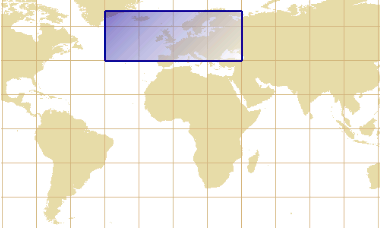

Martin Desruisseaux Christina Hough (pour la traduction anglaise)
Ce document est distribué sous licence Apache 2.
Table des matières
1. Préface
Une communauté d’informations géospatiales est un ensemble de systèmes ou d’individus capables d’échanger
leurs données géospatiales grâce à des définitions et des standards communs ainsi qu’une reconnaissance réciproque.
Comme il existe une multitude de façons de représenter des informations géospatiales,
chaque communauté est amenée à les structurer en fonction de ses centres d’intérêts.
Cette diversité complique la tâche des utilisateurs de systèmes d’information géographiques (SIG)
en les plaçant devant une variété apparemment chaotique de formats et de structures de données.
Les caractéristiques de ces structures varient en fonction des phénomènes observés et des méthodes de mesure,
ainsi que des habitudes des organisations produisant les données.
Une telle variété agit comme un frein aux études qui requièrent des combinaisons de données hétérogènes,
surtout lorsqu’elles proviennent de communautés traditionnellement distinctes.
Par exemple, un chercheur étudiant le choléra peut s’intéresser aux populations de crevettes comme vecteur de propagation de la maladie.
Mais les médecins et les océanographes n’ayant pas forcement l’habitude de partager leurs travaux,
les participants à une telle étude peuvent être limités par les efforts qu’ils sont disposés à fournir pour convertir les données.
Nous ne pouvons pas imposer un format uniforme à l’ensemble des données, car la diversité des formats tient
à des facteurs tels que les contraintes des appareils de mesure et la distribution statistique des valeurs.
Une solution plus flexible consiste à assurer l’interopérabilité des données à travers une interface de programmation
(API) commune.
Cette API n’est pas forcement définie dans un langage de programmation;
la tendance actuelle est plutôt de définir des conventions utilisant les protocoles web existants,
que l’on peut transposer dans des langages de programmation.
Mais pour que cette démarche puisse être pérennisée, l’API doit être largement accepté par des développeurs indépendants.
Autrement dit, l’API doit s’approcher autant que possible des standards industriels.
Les accès aux bases de données relationnelles sont un exemple de tâche ayant bénéficié d’une standardisation relativement bien réussie.
L’industrie a établie un langage commun — le standard SQL — que les concepteurs du Java
ont enrobé dans des interfaces de programmation formant le standard JDBC.
Ces interfaces sont aujourd’hui implementées par de nombreux logiciels libres et commerciaux.
Comme pour les bases de données, des méthodes d’accès aux informations géographiques ont été standardisées.
Mais les efforts en ce sens sont plus récents et leurs intégrations dans les logiciels, surtout les plus anciens,
sont incomplètes et pas toujours cohérentes.
Au moment d’écrire ces lignes, aucun produit de notre connaissance n’implémente la totalité des spécifications.
Mais on trouve de nombreuses implémentations couvrant un spectre plus ou moins large.
La bibliothèque Apache SIS® décrite dans ce document en est une.
Apache SIS se caractérise par un effort soutenu de respect des standards.
De manière générale, le respect des standards exige un effort plus grand que ce qu’aurait requis un développement isolé,
mais se rentabilise par un double avantage: en plus d’accroître l’interopérabilité des données avec celles des projets externes,
il nous indique aussi une voie robuste à suivre pour l’élaboration du modèle conceptuel qui sera reflété par l’API.
En effet, les groupes d’experts qui conçoivent les standards anticipent des difficultés qui échappent parfois à l’ingénieur en début de projet,
mais qui risquent de le rattraper avant la fin.
1.1. Standards et normes
La majorité des standards utilisés par Apache SIS ont été élaborés
par le consortium Open Geospatial (OGC),
parfois en collaboration avec l’organisation internationale de normalisation (ISO).
Certains standards de l’ISO deviennent eux-mêmes des standards Européens via la
directive INSPIRE, ou des standards français via l’AFNOR.
Ces standards offrent deux technologies clés:
Permettre à une communauté d’annoncer leurs informations,
de manière à ce que des individus ou des systèmes en dehors de cette communauté puissent les découvrir.
Transférer des informations d’une communauté vers une autre en préservant leurs sémantiques,
même si les deux communautés utilisent des représentations internes très différentes.
Ces standards sont fournis gratuitement à la communauté internationale sous la forme de
spécifications (fichiers PDF) ou de
schémas (fichiers XSD).
Les organismes de normalisation ne fabriquent pas de logiciel; pour obtenir une implémentation de ces spécifications,
les utilisateurs doivent choisir un des produits conformes disponibles sur le marché ou développer leur propres solutions.
C’est le respect volontaire de ces spécifications qui permet à des communautés à priori indépendantes d’échanger
plus facilement des informations géographiques.
Pour en savoir plus sur le processus de standardisation
Processus de standardisation à l’OGC
Les travaux de l’OGC se font par courriers électroniques,
par conférences téléphoniques et par réunions réelles.
L’OGC organise quatre réunions par années, chacune d’une durée de cinq jours,
hébergées par des organisations membres sponsorisant l’événement (compagnies, universités, centres de recherches, etc.).
Le continent hôte alterne entre l’Europe et l’Amérique du Nord, avec une présence croissante en Asie depuis 2011.
Ces réunions reçoivent habituellement entre 50 et 100 participants parmi les centaines de membres de l’OGC.
Certains participants sont présents à quasiment toutes les réunions et constituent des piliers de l’organisation.
Les réunions de l’OGC offrent des opportunités d’échanges avec des membres d’horizons diverses.
La création d’un standard OGC commence par le regroupement d’organisations ou d’individus constatant un intérêt commun pour une problématique.
Un groupe de travail est proposé sous l’appellation de Domain Working Group (DWG) ou Standard Working Group (SWG).
Les DWG sont ouverts à tout membre de l’OGC,
tandis que les SWG nécessitent de la part des participants un engagement à ne pas entraver
la diffusion du standard par des réclamations de propriétés intellectuelles.
Fonctionnement des groupes de travail (SWG)
Pour être accepté, un projet de standardisation doit être supporté par un nombre minimal de membres appartement à des organisations distinctes.
Ces membres fondateurs rédigent une charte définissant les objectifs du SWG,
qui doit être approuvée par le comité technique de l’OGC.
Chaque membre fondateur est doté d’un droit de vote, dans les limites d’un membre votant par organisation.
Tout nouveau membre qui souhaite joindre le SWG après sa création se verra attribué un rôle d’observateur,
avec attribution sur demande d’un droit de vote après quelques mois d’observation.
Un SWG peut contenir plusieurs dizaines de membres,
mais les volontaires effectuant l’essentiel du travail sont habituellement moins nombreux.
Leurs propositions sont soumises à l’ensemble des membres du groupe, qui peuvent les accepter par consentement unanime.
Les objections, s’il y en a, doivent être argumentées et une alternative proposée.
Les SWG essaient généralement de débattre d’un problème jusqu’à ce qu’un consensus se forme
plutôt que d’avancer malgré des votes négatifs, même s’ils sont minoritaires.
Les décisions du groupes sont alors intégrées dans la spécification par un membre assumant le rôle d’éditeur.
Le groupe de travail doit autant que possible structurer la spécification sous forme d’un noyau autour duquel gravite diverses extensions.
Une suite de tests doit accompagner le standard, et permettre de classer les implémentations en fonction du niveau des tests passés.
Au moins une implémentation de référence passant les tests doit exister pour démontrer que le standard est utilisable.
Lorsque le standard est jugé prêt, le SWG vote une motion
proposant de le soumettre au vote des instances supérieures de l’OGC.
Cette procédure nécessite plusieurs mois.
Il existe une procédure plus rapide pour entériner des standards de fait, mais elle n’est appliquée qu’avec parcimonie.
Le conseil d’architecture (OAB) et le comité technique (TC)
Toute proposition de standard est d’abord examinée par le conseil d’architecture (OGC Architecture Board — OAB).
Ce conseil vérifie que le standard répond aux exigences de l’OGC sur la forme,
sur la modularisation, et en termes d’intégration avec les autres standards.
Si l’OAB donne son aval, le standard est alors soumis au vote des membres du comité technique (TC).
Ce comité regroupe les principaux membres de l’OGC qui sont seuls habilités à donner le vote final.
En cas d’approbation, le standard est diffusé publiquement pour commentaires pendant une période de quelques mois.
Au terme de cette période, le SWG doit examiner et répondre à chacun des commentaires.
Les éventuelles modifications au standard sous soumises à l’OAB, puis le standard est définitivement publié.
Cette diffusion est alors annoncée par un communiqué de presse de l’OGC.
Certains membres de l’OGC et du TC
assurent aussi la liaison avec l’organisation internationale de normalisation (ISO).
La coopération entre les deux organismes va dans les deux sens: l’OGC adopte les standards ISO comme base sur
laquelle développer de nouveaux standards, et certains de ces nouveaux standards OGC deviennent des standards ISO.
Procédure de soumission de propositions de modifications
Tout utilisateur, qu’il soit membre ou non du consortium Open Geospatial, peut proposer des modifications à des standards OGC.
Une liste des propositions actuelles de changements, ainsi qu’un formulaire permettant d’en soumettre de nouvelles,
sont disponibles en ligne.
Chaque proposition est revue par le SWG.
Certains groupes de travail utilisent d’autres systèmes de soumission en parallèle, par exemple GitHub,
hébergés en dehors des structures de l’OGC.
Outre ces organisations formelles de normalisation, il existe aussi des organisations qui ne sont pas officiellement
dédiées à l’élaboration de normes mais dont les travaux ont été largement adoptés comme standards de fait.
En particulier, la base de données EPSG fournit des codes numériques permettant d’identifier
facilement un système de référence des coordonnées parmi plusieurs milliers.
Cette base de données est offerte par des compagnies pétrolières qui ont vu leur intérêt à ce que leurs prospections se fassent
bien à l’endroit voulu, sachant qu’elles ne contrôlent pas toujours la production des cartes sur lesquelles elles se positionnent.
D’autres exemples de standards de fait sont les formats
GeoTIFF pour les données réparties sur une grille (les images), et
Shapefile pour les données vectorielles (les géométries).
Les standards OGC sont spécifiés dans plusieurs dizaines de documents.
Chaque document élabore un service, par exemple les transformations de coordonnées.
Le fonctionnement de chaque service est décrit par un ensemble de classes d’objets et leurs interactions.
Ces éléments sont illustrés par des diagrammes UML (Unified Modeling Language)
dans des spécifications dites « abstraites ».
Les spécifications abstraites ne font référence à aucun langage informatique concret.
Leurs concepts peuvent se concrétiser dans un langage de programmation, une base de données ou un schéma XML de manière plus ou moins directe.
Il existe toutefois une part d’arbitraire dans la façon de concrétiser une spécification abstraite, étant donné que des ajustements sont souvent nécessaires
pour tenir compte des contraintes ou des conventions du langage ciblé.
Certaines structures de données n’existent que dans quelques langages, par exemple les unions qui existent en C/C++ mais pas en Java.
Pour en savoir plus sur les « spécifications d’implémentation »
Note historique
Au tournant du millénaire, les spécifications abstraites étaient explicitement concrétisées dans des spécifications d’implémentations.
Le terme « implémentation » était ici à prendre au sens de tout type d’interfaces (Java ou autres) dérivées des diagrammes
UML — et non pas d’implémentations au sens du Java.
Des telles spécifications existaient pour les langages SQL,
CORBA, COM et Java.
Ces langages étant capables d’exécuter des procédures, les spécifications de cette époque définissaient
non seulement des structures de données, mais aussi des opérations s’appliquant sur ces structures.
Par la suite, l’engouement pour le « web 2.0 » a fait grimper l’intérêt pour le XML au détriment des autres langages.
Les anciennes spécifications d’implémentations ont été dépréciées, et les schémas XSD
sont devenus la principale concrétisation des spécifications abstraites.
Même la façon de concevoir les spécifications abstraites a évoluée: les opérations y sont plus rarement définies,
par conséquence ce qui reste ressemble davantage à des descriptions de schémas de base de données.
Certaines opérations qui étaient définies dans les anciennes normes apparaissent maintenant, sous une autre forme, dans les spécifications des services web.
Enfin le terme « spécification d’implémentation » a été abandonné, pour être englobé dans « standard OGC ».
Mais malgré leur dépréciation, les anciennes spécifications d’implémentation
restent utiles aux programmes en langage Java car:
Leurs modèles plus simples, appliqués aux mêmes concepts, aident à comprendre les nouvelles spécifications.
Ils définissent parfois des façons simples d’effectuer des tâches courantes
là où les nouvelles spécifications se limitent au cas général.
Les opérations étant plus souvent omises dans les nouvelles spécifications,
les anciennes spécifications restent un complément utile pour définir des API.
Le projet Apache SIS se base sur les spécifications les plus récentes,
tout en puisant dans les archives de l’OGC
pour compléter certains standards abstraits ou les rendre un peu plus facile d’utilisation.
Certaines anciennes définitions sont conservées comme « méthodes de commodités »,
n’apportant pas toujours de nouvelles fonctionnalités mais facilitant l’usage pratique d’une bibliothèque.
Le tableau suivant liste les principales normes utilisées par le projet.
Plusieurs normes sont publiées à la fois comme standard ISO et comme standard OGC,
d’où la disposition côte-à-côte des deux premières colonnes.
La section des « spécifications d’implémentation » liste des spécifications qui apportent peu de concepts nouveaux
comparativement aux spécifications abstraites, mais précisent comment les représenter dans des contextes précis
tels qu’un document XML.
Les normes dépréciées mais malgré tout partiellement utilisées apparaissent barrées.
Enfin, les paquets GeoAPI seront introduits dans le chapitre suivant.
Principaux standards en relation avec le projet Apache SIS
Norme ISO
Norme OGC
Titre
Paquet de GeoAPI
Paquet de Apache SIS
Spécifications abstraites
ISO 19103
Conceptual schema language
org.opengis.util
org.apache.sis.util.iso
ISO 19115-1
Topic 11
Metadata
org.opengis.metadata
org.apache.sis.metadata.iso
ISO 19115-2
Metadata — extensions for imagery and gridded data
org.opengis.metadata
org.apache.sis.metadata.iso
ISO 19111
Topic 2
Spatial referencing by coordinates
org.opengis.referencing
org.apache.sis.referencing
ISO 19111-2
Referencing — extension for parametric values
org.opengis.referencing
org.apache.sis.referencing
ISO 19108
Temporal Schema
org.opengis.temporal
ISO 19107
Topic 1
Feature geometry
org.opengis.geometry
org.apache.sis.geometry
ISO 19101
Topic 5
Features
org.opengis.feature
org.apache.sis.feature
ISO 19123
Topic 6
Schema for coverage geometry and functions
org.opengis.coverage
org.apache.sis.coverage
ISO 19156
Topic 20
Observations and measurements
org.opengis.observation
Spécifications d’implémentation
ISO 19139
Metadata XML schema implementation
org.apache.sis.xml
ISO 19136
OGC 07-036
Geography Markup Language (GML) Encoding Standard
org.apache.sis.xml
ISO 19162
OGC 12-063
Well-known text representation of coordinate reference systems
org.apache.sis.io.wkt
ISO 13249
SQL spatial
OGC 01-009
Coordinate Transformation Services
org.opengis.referencing
org.apache.sis.referencing
OGC 01-004
Grid Coverage
org.opengis.coverage
org.apache.sis.coverage
SLD
Styled Layer Descriptor
org.opengis.style
Services web
ISO 19128
WMS
Web Map Service
WMTS
Web Map Tile Service
ISO 19142
WFS
Web Feature Service
WCS
Web Coverage Service
WPS
Web Processing Service
OpenLS
Location Services
SWE
Sensor Web Enablement
SOS
Sensor Observation Service
1.2. Conventions utilisées dans ce guide
Les standards privilégient parfois l’application de certains termes génériques à des contextes particuliers,
qui peuvent différer du contexte dans lequel d’autres communautés emploient ces termes.
Par exemple les termes domain et range peuvent s’appliquer à des fonctions arbitraires
pour désigner l’ensemble des valeurs possibles en entrés et en sorties respectivement.
Mais les fonctions auxquelles certains standards ISO
les appliquent ne sont pas les mêmes que les fonctions auxquelles d’autres bibliothèques les appliquent.
Par exemple ISO 19123 applique ces termes aux objets CV_Coverage,
vus comme des fonctions dont le domaine est l’ensemble des coordonnées spatio-temporelles de la couverture de données
et le range l’ensemble des valeurs de la couverture.
Mais la bibliothèque NetCDF de l’UCAR
applique plutôt ces termes à la fonction convertissant les indices de pixels (son domaine) vers les coordonnées spatio-temporelles (son range).
Ainsi, un range de la bibliothèque de l’UCAR peut être le domaine de ISO 19123.
La bibliothèque Apache SIS privilégie autant que possible l’utilisation des termes dans le sens des normes OGC et ISO.
Mais un soin particulier doit être apporté aux interfaces entre SIS et certaines bibliothèques externes, afin de réduire les risques de confusions.
1.2.1. Code de couleurs
Les éléments définis dans un langage informatique, tels que les classes ou méthodes en Java
ainsi que les éléments dans un fichier XML, apparaissent avec une police de caractères mono-espacée.
Afin de faciliter la compréhension des liens qui existent entre Apache SIS et les standards,
ces éléments sont en outre représentés en utilisant les codes de couleurs suivants:
Les éléments définis dans un standard de l’OGC
ou de l’ISO apparaissent en bleu.
Exemple: CD_Ellipsoid.
Les éléments définis dans GeoAPI apparaissent en vert.
Exemple: Ellipsoid.
Les éléments définis dans Apache SIS apparaissent en brun.
Exemple: DefaultEllipsoid.
Les autres éléments, notamment ceux du Java standard, sont laissés en noir.
Exemple: String.
Des compléments d’information apparaissent dans des boîtes grises.
Le lecteur peut ignorer ces boîtes grises sans que cela ne nuise à la compréhension du texte.
2. GeoAPI
Le projet GeoAPI offre un ensemble d’interfaces Java pour les applications géo-spatiales.
Dans une séries de paquets org.opengis.*, GeoAPI définit des structures représentant des méta-données,
des systèmes de référence des coordonnées, ainsi que des opérations effectuant des projections cartographiques.
Dans une partie qui n’est pas encore standardisée — dénommée pending — GeoAPI définit des structures
représentant des images géo-référencées, des géométries, des filtres pouvant s’appliquer à des requêtes, et d’autres fonctionnalités.
Ces interfaces suivent de très près les spécifications de l’OGC, tout en les interprétant et en les adaptant
de manière à répondre aux attentes des développeurs Java — par exemple en se conformant aux conventions de nommage.
Ces interfaces bénéficient à la fois aux applications clientes et aux bibliothèques:
Les développeurs des applications clientes bénéficient d’une plus grande base de connaissances disponible sur internet
(due aux nombreuses publications en lien avec les standards de l’OGC), ainsi que d’une interopérabilité accrue.
L’interopérabilité est facilitée par une meilleure séparation entre les applications qui appellent les fonctions de GeoAPI,
et les bibliothèques qui implémentent GeoAPI. Il s’agit d’une séparation similaire à celle qu’offrent les interfaces
JDBC (Java Database Connectivity) du Java standard.
En utilisant l’API des interfaces, les développeurs peuvent faire abstraction de l’implémentation sous-jacente.
Par exemple ils peuvent effectuer des projections cartographiques à l’aide des bibliothèques
Proj.4 ou Apache SIS,
sans changer leurs programmes lorsqu’ils changent de bibliothèque.
Les développeurs des bibliothèques héritent de l’expertise des auteurs des spécifications, via les modèles que représentent les interfaces.
GeoAPI fournit aussi un cadre dans lequel les développeurs peuvent implémenter en priorité les fonctionnalité qui leurs sont le plus nécessaires,
tout en ayant des points où raccrocher les développements futurs.
Par exemple les clients peuvent appeler une fonction de GeoAPI même si elle n’est pas encore supportée par la bibliothèque,
quitte à obtenir une valeur nulle en attendant qu’une nouvelle version de la bibliothèque retourne une valeur intéressante.
Pour en savoir plus sur les origines du projet GeoAPI
Historique du projet GeoAPI
En 2001, le consortium Open GIS (l’ancien nom du consortium Open Geospatial) publia la spécification d’implémentation
OGC 01-009: Coordinate Transformation Services.
Cette spécification, élaborée par Computer Aided Development Corporation (Cadcorp),
était accompagnée d’interfaces COM, CORBA et Java.
À cette époque, la vague des services web n’avait pas encore éclipsé les interfaces de programmation classiques.
Les interfaces de l’OGC anticipaient tout de même un monde connecté en réseau,
mais misaient plutôt — dans le cas du Java — sur la technologie RMI (Remote Method Invocation).
Bien que le projet GeoAPI n’existait pas encore, nous désignons rétrospectivement ces interfaces historiques sous le nom de
« GeoAPI 0.1 ».
Ces interfaces utilisaient déjà le nom de paquet org.opengis, qui sera adopté par GeoAPI.
En 2002, des développeurs de projets libres ont lancé un
appel à la création d’un API géo-spatial.
La proposition initiale suscita l’intérêt d’au moins cinq projets libres.
Le projet fut créé sur SourceForge,
qui héberge depuis lors le code source dans un dépôt Subversion.
Le projet pris le nom de « GeoAPI » à ce moment là, et utilisa les interfaces de la spécification OGC 01-009 comme point de départ.
Quelques mois plus tard, l’OGC lança le projet
GO-1: Geographic Objects,
qui poursuivait des buts similaires à ceux de GeoAPI.
Entre-temps, l’OGC avait abandonné certaines de leur spécifications en faveur des normes ISO.
GeoAPI et GO-1 ont joint leurs efforts pour une refonte des interfaces de GeoAPI en les basant sur ces nouvelles normes ISO.
La première mouture, GeoAPI 1.0, a servit de point de départ
aux premières ébauches de la spécification OGC 03-064 du groupe de travail GO-1.
La version finale de cette spécification est devenue un standard OGC en 2005, et
GeoAPI 2.0 a été publiée à cette occasion.
Le projet GO-1 était porté essentiellement par une compagnie nommée Polexis.
Son rachat par Sys Technology et le changement de priorité des nouveaux propriétaires
ont causé l’arrêt des travaux de GO-1, et par ricochet un ralentissement des développements de GeoAPI.
Afin de reprendre les développements, un nouveau groupe de travail « GeoAPI 3.0 » a été créé à l’OGC.
Ce groupe a réduit les ambitions par rapport à GeoAPI 2.0 en se concentrant sur les interfaces les plus stables,
et en plaçant les autres — notamment les géométries — dans un module nommé « pending »,
pour considérations futures. GeoAPI 3.0 est devenu un
standard OGC en 2011.
Cette version a été la première à être déployée dans le dépôt central de Maven.
Les interfaces Java du projet GeoAPI sont parfois générées à partir d’autres fichiers fournis par l’OGC,
tels que les fichiers XSD. Mais il y a toujours une révision manuelle, et très souvent des modifications
par rapport aux fichiers générés par des processus automatiques.
Les écarts par rapport aux normes sont documentés dans chaque classe et chaque méthode concernées.
Chaque mention d’un écart est aussi recopiée dans une page unique,
pour donner une vue d’ensemble.
Étant donné que ces écarts brouillent les liens qui existent entre les standards et certaines interfaces Java,
la correspondance entre ces langages est explicitée par des annotations @UML
et des fichiers de propriétés, décrits dans la section suivante.
Pour en savoir plus sur les raisons d’une définition manuelle des interfaces Java
Des spécifications de l’OGC aux interfaces Java
Il est possible de générer automatiquement des interfaces Java à partir des standards de l’OGC à l’aide d’outils existants.
Une des approches les plus utilisées est de transformer les schémas XSD
en interfaces Java à l’aide de l’utilitaire en ligne de commande xjc.
Cet utilitaire étant fournit avec la plupart des distributions du Java (il fait partie des outils de JAXB),
cette approche est choisie par plusieurs projets que l’on trouve sur internet.
D’autres approches utilisent des outils intégrés à l’environnement de développement Eclipse,
ou prennent comme point de départ les schémas UML plutôt que XSD.
Une approche similaire avait été tentée dans les débuts du projet GeoAPI, mais a été rapidement abandonnée.
Nous avons privilégié une approche manuelle pour les raisons suivantes:
Certains schémas XSD sont beaucoup plus verbeux que les schémas UML d’origines.
Une conversion à partir des schémas XSD introduit, au moins dans le cas des méta-données,
près du double du nombre d’interfaces réellement définies par le standard, sans que cela n’apporte de nouvelles fonctionnalités.
Les schémas XSD définissent aussi des attributs propres aux documents XML
(id, uuid, xlink:href, etc.),
qui n’existent pas dans les diagrammes UML originaux et que l’on ne souhaite pas forcément exposer dans un API Java.
Une conversion à partir des schémas UML évite ce problème, mais les outils capable d’effectuer cette opération sont plus rares.
Exemple:
Les schémas XSD des méta-données insèrent
un élément <gmd:CI_Citation> à l’intérieur de <gmd:citation>,
un élément <gmd:CI_OnlineResource> à l’intérieur de <gmd:onlineResource>,
et ainsi de suite pour la centaine de classes définies dans le standard ISO 19115.
Cette redondance n’est absolument pas nécessaire à un programme Java.
Les standards de l’OGC utilisent des conventions de nommage qui sont différentes de celles du Java.
En particulier les noms de presque toutes les classes de l’OGC commencent par un préfixe de deux lettres,
comme dans MD_Identifier. Ces préfixes jouent le même rôle que les noms de paquets en Java.
GeoAPI adapte cette pratique en utilisant des noms d’interfaces sans préfixes,
et en plaçant ces interfaces dans des paquets correspondants aux préfixes mais avec des noms plus descriptifs.
Occasionnellement nous changeons aussi les noms, par exemple pour éviter des acronymes
ou pour se conformer à une convention établie telle que Java beans.
Exemple:
la classe MD_Identifier de l’OGC devient
l’interface Identifier dans le paquet org.opengis.metadata.
La classe SC_CRS de l’OGC devient l’interface CoordinateReferenceSystem,
et l’association usesDatum devient une méthode getDatum() — et non pas
« getUsesDatum() » comme aurait fait un outil de conversion automatique.
Nous ne laissons pas des programmes appliquer aveuglement des règles qui ignorent les conventions de la communauté dont on traduit les schémas.
Les standards contiennent parfois des structures qui n’ont pas d’équivalent direct en Java,
notamment les unions telles qu’on peut trouver en C/C++.
La stratégie employée pour obtenir une fonctionnalité équivalente en Java dépend du contexte:
multi-héritage des interfaces, modification de la hiérarchie ou simplement omettre l’union.
Les décisions se font au cas-par-cas en fonction de l’analyse des besoins.
Exemple:
Le standard ISO 19111 définit différents types de systèmes de coordonnées, tels que sphérique, cylindrique, polaire ou cartésien.
Puis, il définit différents sous-ensembles de ces types de systèmes de coordonnées.
Ces sous-ensembles, représentés par des unions, servent à spécifier qu’une classe peut être associée à seulement tel ou tel type de système de coordonnées.
Par exemple l’union des types pouvant être associés à une image, nommée CS_ImageCS,
ne contient que CS_CartesianCS et CS_AffineCS.
Dans ce cas particulier, nous obtenons en Java l’effet souhaité par une modification de la hiérarchie des classes:
nous définissons l’interface CartesianCS comme une spécialisation de AffineCS, ce qui est sémantiquement correct.
Mais il n’est pas possible d’appliquer une stratégie similaire pour les autres unions sans violer la sémantique.
Plusieurs spécifications se chevauchent. GeoAPI effectue un travail d’intégration en remplaçant certaines
structures qui font doublons par des références vers les structures équivalentes du standard qui les définies le mieux.
Exemple:
Le standard ISO 19115, qui définit des structures de méta-données, s’aventure aussi à décrire quelques
structures représentant les systèmes de références des coordonnées (CRS).
Or ces derniers sont le sujet à part entière d’un autre standard: ISO 19111.
D’ailleurs le standard ISO 19111:2007 stipule, dans sa section 3, qu’il réutilise tous les éléments
de ISO 19115 à l’exclusion de MD_CRS et de ses composantes.
Les interfaces de GeoAPI réduisent la redondance en appliquant à l’ensemble du projet l’exclusion recommandée par ISO 19111.
Certains standards ont vu leur complexité s’accroître pour des raisons historiques plutôt que techniques,
liées au processus de standardisation. GeoAPI réduit la dette technique en concevant les interfaces comme
si chaque élément avait pu être intégré à sa place, sans les contraintes liées à l’ordre chronologique
dans lequel les standards ont été publiés.
Exemple:
Le standard ISO 19115-2 est une extension du standard ISO 19115-1 ajoutant des structures de méta-données d’images.
Ces méta-données ont été définies dans un standard séparé parce qu’elles n’ont pas été prêtes à temps pour la publication de la première partie du standard.
Comme il n’était pas possible, pour des raisons administratives, d’ajouter des attributs dans les classes déjà publiées,
les nouveaux attributs ont été ajoutées dans une sous-classe portant quasiment le même nom.
Ainsi, le standard ISO 19115-2 définit une classe MI_Band qui étend la
classe MD_Band du standard ISO 19115-1 en y ajoutant les attributs qui
auraient dû apparaître directement dans la classe parente s’ils avaient été prêts à temps.
Dans GeoAPI, nous avons choisis de « réparer » ces anomalies en fusionnant ces deux classes en une seule interface.
GeoAPI est constitué de plusieurs modules.
Les modules geoapi et geoapi-pending
fournissent les interfaces dérivées des schémas UML des standards internationaux.
Le modèle conceptuel sera expliqué en détails dans les chapitres décrivant l’implémentation Apache SIS.
On peut toutefois avoir un aperçu de son contenu en consultant la page listant les
types et méthodes de GeoAPI et les standards d’où ils proviennent.
Pour en savoir plus sur les modules de GeoAPI
Les modules de GeoAPI
Le projet GeoAPI est composé d’une partie standardisée (geoapi) et
d’une partie expérimentale (geoapi-pending). Ces deux parties étant
mutuellement exclusives, les utilisateurs doivent veiller à ne pas les mélanger dans un même projet.
Cette séparation est garantie pour tous les projets qui ne dépendent que du dépôt central de Maven
(incluant les versions finales de Apache SIS),
car le module geoapi-pending n’est jamais déployé sur ce dépôt central.
En revanche certaines branches de développement de SIS peuvent dépendre de geoapi-pending.
Les modules de GeoAPI sont:
geoapi — contient les interfaces couvertes par le
standard GeoAPI de l’OGC.
Les versions finales de Apache SIS dépendent de ce module.
geoapi-pending — contient une
copie de toutes les interfaces du module geoapi
(non pas une dépendance) avec des ajouts qui n’ont pas encore été approuvés comme un standard OGC.
Certains ajouts apparaissent dans des interfaces normalement définies par le module geoapi,
d’où la nécessité de les copier.
Les branches de développement jdk6,
jdk7 et jdk8 de Apache SIS dépendent de ce module,
mais cette dépendance est transformée en une dépendance vers le module geoapi
standard au moment de fusionner les branches avec le tronc.
geoapi-conformance — contient
une suite de tests JUnit que les développeurs peuvent utiliser pour tester leurs implémentations.
geoapi-examples — contient des
exemples d’implémentations relativement simples. Ces exemples sont placés dans le domaine public
afin d’encourager les utilisateurs à les copier et les adapter à leurs besoins si les services
de Apache SIS ne conviennent pas.
geoapi-proj4 — contient une
implémentation partielle des paquets org.opengis.referencing
sous forme d’adaptateurs basés sur la bibliothèque C/C++ Proj.4.
Ce module peut être utilisé comme alternative au module sis-referencing
pour certaines fonctions.
geoapi-netcdf — contient une implémentation partielle des paquets
org.opengis.referencing et org.opengis.coverage
sous forme d’adaptateurs basés sur la bibliothèque NetCDF de l’UCAR.
La suite de tests de ce module a été conçue de manière à être réutilisable par d’autres projets.
Apache SIS l’utilise pour tester son propre module sis-netcdf.
geoapi-openoffice — contient
un add-in pour les suites bureautiques Libre/OpenOffice.org.
2.1. Correspondances entre GeoAPI et les spécifications abstraites
Pour chaque classe, méthode et constante définie à partir d’un standard OGC ou ISO,
GeoAPI indique sa provenance à l’aide d’annotations définies dans le paquet org.opengis.annotation.
En particulier l’annotation @UML indique le standard,
le nom de l’élément dans ce standard ainsi que son niveau d’obligation.
Par exemple dans l’extrait de code suivant, la première annotation @UML indique
que l’interface Java qui la suit (ProjectedCRS) est définie à partir du type
SC_ProjectedCRS du standard ISO 19111.
La seconde annotation @UML, appliquée cette fois à la méthode
getCoordinateSystem(), indique que la méthode est définie
à partir de l’association coordinateSystem du standard ISO 19111,
et que cette association est obligatoire — ce qui, traduit en Java, signifie que la méthode n’est
pas autorisée à retourner la valeur null.
packageorg.opengis.referencing.crs;
/**
* A 2D coordinate reference system used to approximate the shape of the earth on a planar surface.
*/
@UML(specification=ISO_19111, identifier="SC_ProjectedCRS")
publicinterfaceProjectedCRSextendsGeneralDerivedCRS {
/**
* Returns the coordinate system, which must be Cartesian.
*/
@UML(obligation=MANDATORY, specification=ISO_19111, identifier="coordinateSystem")
CartesianCSgetCoordinateSystem();
}
Les méthodes d’introspections du Java permettent d’accéder à ces informations pendant l’exécution d’une application.
C’est utile pour obtenir les noms à afficher à des utilisateurs familiers avec les normes de l’OGC,
ou pour écrire des éléments dans un document XML.
La classe org.apache.sis.util.iso.Types fournit des méthodes de commodité
telles que getStandardName(Class) pour effectuer cette opération.
Par exemple le code suivant affichera
« Le nom standard du type org.opengis.referencing.crs.ProjectedCRS est SC_ProjectedCRS »:
Class<?> type = ProjectedCRS.class;
System.out.println("Le nom standard du type " + type.getName() + " est " + Types.getStandardName(type));
La méthode de commodité Types.forStandardName(String) effectue l’opération inverse.
Les applications qui souhaiteraient effectuer ces opérations sans utiliser les méthodes de commodités de Apache SIS
trouveront des indications dans un chapitre séparé.
2.1.1. Correspondances implicites avec le JDK standard
Certaines classes et méthodes n’ont ni annotation @UML,
ni entrée dans le fichier class-index.properties.
Il s’agit soit d’extensions de GeoAPI, ou soit de types définis dans d’autres bibliothèques,
notamment le JDK standard.
Pour ce dernier cas, la correspondance avec les standards ISO est implicite.
Le tableau suivant décrit cette correspondance pour les types de la norme ISO 19103.
Les types primitifs du Java standard sont préférés lorsqu’ils sont applicables,
mais parfois leurs équivalents sous forme d’objets sont employés lorsqu’il est nécessaire d’autoriser des valeurs nulles.
Correspondances entre ISO 19103 et JDK
Type ISO
Type JDK
Remarques
Nombres
Integer
int
Parfois java.lang.Integer pour les attributs optionnels.
Integer (certains cas)
long
Parfois java.lang.Long pour les attributs optionnels.
Real
double
Parfois java.lang.Double pour les attributs optionnels.
Souvent org.opengis.util.InternationalString (voir ci-dessous).
LocalisedCharacterString
java.lang.String
Sequence<Character>
java.lang.CharSequence
Character
char
Dates et heures
Date
java.util.Date
Time
java.util.Date
DateTime
java.util.Date
Collections
Collection
java.util.Collection
Bag
java.util.Collection
Un Bag est similaire à un
Set sans la restriction d’unicité.
Set
java.util.Set
Sequence
java.util.List
Dictionary
java.util.Map
KeyValuePair
java.util.Map.Entry
Énumérations
Enumeration
java.lang.Enum
CodeList
(pas d’équivalent)
Voir org.opengis.util.CodeList ci-dessous.
Divers
Boolean
boolean
Parfois java.lang.Boolean pour les attributs optionnels.
Any
java.lang.Object
L’équivalent le plus direct de CharacterString est la classe String,
mais GeoAPI emploie souvent l’interface InternationalString pour permettre au client de choisir la langue.
C’est utile par exemple sur un serveur fournissant simultanément des pages dans plusieurs langues.
En reportant les traductions à l’utilisation des objets plutôt qu’au moment de leur création, on permet à la bibliothèque
SIS de fournir les mêmes instances de Metadata
ou Coverage (par exemple) pour les mêmes données peu importe la langue du client.
Les traductions peuvent être faites à la volée à l’aide d’un ResourceBundle de l’application,
ou être fournies directement avec les données (cas des Metadata notamment).
Les Enumeration correspondent aux Enum du Java.
Ils ont en commun de définir toutes les valeurs autorisées, sans permettre à l’utilisateur d’en ajouter.
Les CodeList sont similaires à ces énumérations, excepté que les utilisateurs peuvent y ajouter leurs propres éléments.
Le JDK standard n’offrant pas cette possibilité,
GeoAPI définit une classe abstraite CodeList reproduisant certaines fonctionnalités de Enum tout en étant extensible.
Les extensions s’obtiennent par les méthodes statiques valueOf(String) qui,
contrairement à celle de Enum, créeront de nouvelles instances si le nom donné ne correspond pas au nom d’une instance existante.
MediumName cdRom = MediumName.CD_ROM;MediumName usbKey = MediumName.valueOf("USB_KEY"); // Aucune constante n’existe pour cette valeur.
assertMediumName.valueOf("CD_ROM") == cdRom : "valueOf doit retourner les constantes existantes.";
assertMediumName.valueOf("USB_KEY") == usbKey : "valueOf doit cacher les valeurs précédemment demandées.";
2.2. Implémentations des interfaces
Apache SIS implémente la plupart des interfaces de GeoAPI avec une classe du même nom que l’interface,
mais préfixée de « Abstract », « Default » ou « General ».
Les classes de Apache SIS qui sont préfixées par « Default » peuvent être instanciées directement
par une instruction new DefaultXXX(…) ou par la méthode createXXX(…) correspondante d’une fabrique.
Example: pour représenter un système de référence de coordonnées projetées (Mercator, Lambert, etc):
org.opengis.referencing.crs.ProjectedCRS est l’interface définie par GeoAPI sur la base du standard ISO 19111, et
org.apache.sis.referencing.crs.DefaultProjectedCRS est l’implémentation fournie par Apache SIS.
Les deux approches attendent les mêmes arguments (omis dans cet exemple).
Dans la configuration par défaut de Apache SIS,
utiliser CRSFactory.createXXX(…) ou new DefaultXXX(…) revient presque au même
excepté que les Factory peuvent retourner des instances existantes
plutôt que de créer systématiquement de nouvelles instances,
et que les exceptions en cas d’arguments invalides sont de types différents.
Dans des configurations plus avancées, l’usage des Factory permet de
réduire la dépendance directe d’une application envers SIS
et de permettre une inversion de contrôle.
Le préfix « General » est parfois utilisé à la place de « Default »
afin de signaler que des implémentations alternatives existent pour des cas spécifiques.
Par exemple l’interface Envelope est implémentée par au moins deux classes de Apache SIS:
GeneralEnvelope et Envelope2D.
La première implémentation peut représenter des enveloppes de n’importe quelle dimension
alors que la seconde implémentation est spécialisée pour les enveloppes à deux dimensions.
Les classes de Apache SIS qui sont préfixées par « Abstract » ne doivent pas – en principe – être instanciées.
Il faut plutôt instancier une sous-classe non-abstraites.
Toutefois plusieurs classes de SIS ne sont abstraites que conceptuellement,
sans que la définition de la classe ne contienne le mot-clé abstract du Java.
Ces classes peuvent être instanciées par l’instruction new AbstractXXX(…)
– mais pas par les Factory – malgré qu’elles soient conceptuellement abstraites.
Mais ces instanciations ne devraient être faites qu’en dernier recours,
lorsqu’il n’est vraiment pas possible de déterminer le sous-type exact.
3. Classes et méthodes utilitaires
Ce chapitre décrit des aspects de Apache SIS qui s’appliquent à l’ensemble de la bibliothèque.
La plupart de ces utilitaires ne sont pas spécifiques aux systèmes d’information spatiales.
3.1. Modes de comparaisons des objets
Il existe différentes opinions sur la façon d’implémenter la méthode Object.equals(Object) du Java standard.
Selon certains, il doit être possible de comparer différentes implémentations d’une même interface ou classe de base.
Mais cette politique nécessite que chaque interface ou classe de base définisse entièrement dans sa Javadoc les critères ou calculs
que doivent employer les méthodes equals(Object) et hashCode() dans toutes les implémentations.
Cette approche est choisie notamment par java.util.Collection et ses interfaces filles.
La transposition de cette approche aux centaines d’interfaces de GeoAPI serait toutefois une entreprise ardue,
qui risquerait d’être assez peu suivie par les diverses implémentations.
En outre, elle se fait au détriment de la possibilité de prendre en compte des attributs supplémentaires dans les interfaces filles
si cette possibilité n’a pas été spécifiée dans l’interface parente.
Cette contrainte découle des points suivants du contrat des méthodes equals(Object) et hashCode():
A.equals(B) implique B.equals(A) (symétrie);
A.equals(B) et B.equals(C) implique A.equals(C) (transitivité);
Par exemple ces trois contraintes sont violées si A (et éventuellement C)
peuvent contenir des attributs que B ignore.
Pour contourner cette difficulté, une approche alternative consiste à exiger que les objets comparés par la méthode
Object.equals(Object) soient exactement de la même classe, c’est-à-dire que A.getClass() == B.getClass().
Cette approche est parfois considérée contraire aux principes de la programmation orientée objets.
Dans la pratique, pour des applications relativement complexes, l’importance accordée à ces principes dépend du contexte dans lequel les objets sont comparés:
si les objets sont ajoutés à un HashSet ou utilisés comme clés dans un HashMap,
alors nous avons besoin d’un strict respect du contrat de equals(Object) et hashCode().
Mais si le développeur compare les objets lui-même, par exemple pour vérifier si des informations qui l’intéresse ont changées,
alors les contraintes de symétrie, transitivité ou de cohérence avec les valeurs de hachages peuvent ne pas être pertinentes pour lui.
Des comparaisons plus permissives peuvent être souhaitables, allant parfois jusqu’à tolérer de légers écarts dans les valeurs numériques.
Afin de donner une certaine flexibilité aux développeurs, un grand nombre de classes de la bibliothèque SIS
implémentent l’interface org.apache.sis.util.LenientComparable, qui défini une méthode equals(Object, ComparisonMode).
Les principaux modes de comparaisons sont:
STRICT — Les objets comparés doivent être de la même classe
et tous leurs attributs strictement égaux, y compris d’éventuels attributs publics propres à l’implémentation.
BY_CONTRACT — Les objets comparés doivent implémenter la même interface de GeoAPI (ou tout autre standard),
mais n’ont pas besoin d’être de la même classe d’implémentation. Seuls les attributs définis dans l’interface sont comparés;
tout autres attributs propres à l’implémentation — même s’ils sont publics — sont ignorés.
IGNORE_METADATA — Comme BY_CONTRACT,
mais ne compare que les attributs qui influencent les opérations (calculs numériques ou autre) effectuées par l’objet.
Par exemple dans un référentiel géodésique, la longitude (par rapport à Greenwich) du méridien d’origine sera pris en compte
alors que le nom de ce méridien sera ignoré.
APPROXIMATIVE — Comme IGNORE_METADATA,
mais tolère de légères différences dans les valeurs numériques.
Le mode par défaut, utilisé par les toutes les méthodes equals(Object) de SIS,
est STRICT. Ce mode est choisi pour une utilisation sécuritaire — notamment avec HashMap —
sans nécessiter de définitions rigoureuses des méthodes equals(Object) et hashCode() dans toutes les interfaces.
Avec ce mode, l’ordre des objets (A.equals(B) ou B.equals(A)) n’a pas d’importance.
C’est toutefois le seul mode à offrir cette garantie.
Dans l’expression A.equals(B), le mode BY_CONTRACT
(et donc par extension tous les autres modes qui en dépendent) ne comparera que les propriétés connues de A,
sans se soucier de savoir si B en connaît davantage.
3.2. Internationalisation
Dans une architecture où un programme exécuté sur un serveur fournit ses données à plusieurs clients,
les conventions locales du serveur ne sont pas nécessairement les mêmes que celles des clients.
Les conventions peuvent différer par la langue, mais aussi par la façon d’écrire les valeurs numériques
(même entre deux pays parlant la même langue) ainsi que par le fuseau horaire.
Pour produire des messages conformes aux conventions du client, SIS emploie
deux approches qui diffèrent par leur niveau de granularité: au niveau des messages eux-mêmes,
ou au niveau des objets produisant les messages. L’approche utilisée détermine aussi s’il est
possible de partager une même instance d’un objet pour toutes les langues.
3.2.1. Chaînes de caractères distinctes pour chaque conventions locales
Certaines classes ne sont conçues que pour fonctionner selon une convention locale à la fois.
C’est évidemment le cas des implémentations standards de java.text.Format,
puisqu’elles sont entièrement dédiées au travail d’internationalisation.
Mais c’est aussi le cas de d’autres classes moins évidentes comme
javax.imageio.ImageReader/ImageWriter ainsi que les sous-classes de Exception.
Lorsque une de ces classes est implémentée par SIS,
nous l’identifions en implémentant l’interface org.apache.sis.util.Localized.
La méthode getLocale() de cette interface permet alors de déterminer
selon quelles conventions locales l’instance produira ses messages.
Certaines sous-classes de Exception définies par SIS implémentent aussi l’interface Localized.
Pour ces exceptions, le message d’erreur peut être produit selon deux conventions locales selon qu’il s’adresse à l’administrateur du système ou au client:
getMessage() retourne le message de l’exception selon les conventions par défaut du système, alors que
getLocalizedMessage() retourne le message de l’exception selon les conventions locales spécifiées par getLocale().
Ce Locale sera lui-même déterminé par l’objet Localized qui a lancé l’exception.
Exemple:
Supposons que dans un environnement où la langue par défaut serait l’anglais,
un objet AngleFormat est construit pour lire des angles selon les conventions françaises.
Si une ParseException est lancée lors de l’utilisation de ce formateur,
alors getMessage() retournera le message d’erreur en anglais
tandis que getLocalizedMessage() retournera le message d’erreur en français.
Les exceptions définies par SIS n’implémentent pas toutes l’interface Localized.
Seules celles dont le message est le plus susceptible d’être montré à l’utilisateur sont ainsi localisées.
Les ParseException sont de bonnes candidates puisqu’elles surviennent souvent
suite à une saisie incorrecte du client. En revanche les NullPointerException
sont généralement la conséquence d’une erreur de programmation;
elles peuvent être localisées dans la langue par défaut du système, mais ça sera généralement tout.
La classe utilitaire org.apache.sis.util.Exceptions fournit
des méthodes de commodité pour obtenir des messages selon des conventions locales spécifiées
lorsque cette information est disponible.
3.2.2. Instance unique pour toutes les conventions locales
Les API définit par SIS ou hérités de GeoAPI privilégient plutôt l’utilisation du type
InternationalString là où une valeur de type String serait susceptible d’être localisée.
Cette approche permet de différer le processus d’internationalisation au moment d’obtenir
une chaîne de caractères plutôt qu’au moment de construire l’objet qui les contient.
C’est particulièrement utile pour les classes immutables qui serviront à créer des instances uniques
indépendamment des conventions locales.
Exemple:
Il existe dans SIS une seule instance de type
OperationMethod représentant la projection de Mercator, quelle que soit la langue du client.
Mais sa méthode getName() fournit (indirectement)
une instance de InternationalString telle que
toString(Locale.ENGLISH) retourne Mercator Projection
alors que toString(Locale.FRENCH) retourne Projection de Mercator.
En définissant des objets spatiaux indépendemment des conventions locales, on réduit les risques de sur-coûts de calculs.
Par exemple il est plus facile de détecter que deux cartes emploient la même projection cartographique si cette dernière
est représentée par la même instance de CoordinateOperation, même si la projection
porte différents noms selon les pays. En outre, certain types de CoordinateOperation
peuvent nécessiter des grilles de transformation de coordonnées, ce qui accroît l’intérêt de partager une instance unique
pour des raisons d’économie de mémoire.
3.2.3. Convention Locale.ROOT
Toutes les méthodes SIS recevant ou retournant une valeur de type Locale
acceptent la valeur Locale.ROOT. Cette valeur est interprétée comme signifiant de ne pas localiser le texte.
La notion de texte non-localisé est un peu fausse, puisqu’il faut bien choisir une convention de format.
Mais cette convention, bien que très proche de l’anglais, sera généralement légèrement différente.
Par exemple:
Les identifiants sont écrits tels qu’ils apparaissent dans les diagrammes UML,
par exemple blurredImage au lieu de Blurred image.
Les dates sont écrites selon le format ISO 8601,
qui ne correspond pas aux conventions anglaises.
Les nombres sont écrits à l’aide de leurs méthodes toString() plutôt qu’à l’aide d’un java.text.NumberFormat.
Il en résulte des différences dans le nombre de chiffres significatifs, l’utilisation de la notation exponentielle et l’absence de séparateur des milliers.
3.2.4. Traitement des caractères
Les chaînes de caractères en Java utilisent l’encodage UTF-16. Il existe une correspondance directe
entre les valeurs de type char et la très grande majorité des caractères, ce
qui facilite l’utilisation des chaînes lorsque ces caractères suffisent.
Mais certains caractères Unicode ne sont pas représentables par un seul char.
Ces caractères supplémentaires comprennent certains idéogrammes,
mais aussi des symboles routiers et géographiques dans la plage 1F680 à 1F700.
Le support de ces caractères supplémentaires nécessite des itérations un peu plus complexes
que le cas classique où l’on supposait une correspondance directe.
Ainsi, au lieu de la boucle de gauche ci-dessous, les applications internationales devraient
généralement utiliser la boucle de droite:
Boucle à éviter
Boucle recommandée
for (int i=0; i<string.length(); i++) {
char c = string.charAt(i);
if (Character.isWhitespace(c)) {
// Un espace blanc a été trouvé.
}
}
for (int i=0; i<string.length();) {
int c = string.codePointAt(i);
if (Character.isWhitespace(c)) {
// Un espace blanc a été trouvé.
}
i += Character.charCount(c);
}
SIS supporte les caractères supplémentaires en utilisant la boucle de droite lorsque nécessaire.
Mais la boucle de gauche reste occasionnellement utilisée lorsqu’il est connu que les caractères recherchés ne sont
pas des caractères supplémentaires, même si la chaîne dans laquelle on fait la recherche peut en contenir.
3.2.4.1. Interprétation des espaces blancs
Le Java standard fournit deux méthodes pour déterminer si un caractères est un espace blanc:
Character.isWhitespace(…) et Character.isSpaceChar(…).
Ces deux méthodes diffèrent dans leurs interprétations des espaces insécables, des tabulations et des retours à la ligne.
La première méthode est conforme à l’interprétation couramment utilisée dans des langages telles que le Java, C/C++ et XML,
qui considère les tabulations et retours à la ligne comme des espaces blancs,
alors que les espaces insécables sont interprétés comme des caractères non-blanc.
La seconde méthode — strictement conforme à la définition Unicode — fait l’interprétation inverse.
SIS emploie ces deux méthodes dans des contextes différents.
isWhitespace(…) est utilisée pour séparer les éléments d’une liste (nombres, dates, mots, etc.),
tandis que isSpaceChar(…) est utilisée pour ignorer les espaces blancs à l’intérieur d’un seul élément.
Exemple:
Supposons une liste de nombres représentés selon les conventions françaises.
Chaque nombre peut contenir des espace insécables comme séparateurs des milliers,
tandis que les différents nombres de la liste peuvent être séparés par des espaces ordinaires, des tabulations ou des retours à la ligne.
Pendant l’analyse d’un nombre, on veut considérer les espaces insécables comme faisant partie du nombre,
alors qu’une tabulation ou un retour à la ligne indique très probablement une séparation entre ce nombre et le nombre suivant.
On utilisera donc isSpaceChar(…).
Inversement, lors de la séparation des nombres de la liste, on veut considérer les tabulations et
les retours à la ligne comme des séparateurs mais pas les espaces insécables.
On utilisera donc isWhitespace(…).
Le rôle des espaces ordinaires, qui pourraient s’appliquer aux deux cas, doit être décidé en amont.
Dans la pratique, cette distinction se traduit pas une utilisation de isSpaceChar(…)
dans les implémentations de java.text.Format,
et une utilisation de isWhitespace(…) dans pratiquement tout le reste
de la bibliothèque SIS.
4. Systèmes de références spatiales
Pour donner une position sur la Terre on peut utiliser des noms tels que celui d’une ville ou une adresse postale
— on parle alors de références spatiales par identifiants —
ou on peut donner des valeurs numériques valides dans un système de coordonnées donné
— on parle alors de références spatiales par coordonnées.
Chaque système implique des approximations telles que:
Le choix de la forme géométrique (géoïde, ellipsoïde, etc.) utilisée comme approximation de la forme de la Terre.
Le choix des propriétés géométriques (angles, distances, etc.) à préserver lors de la représentation d’une carte sur une surface plane.
Les pertes de précision lorsque l’on doit transformer des positions exprimées selon un système vers des positions exprimées selon un autre système.
En l’absence d’indication contraire, la précision recherchée pour les coordonnées sur la Terre est de 1 centimètre.
Mais la maîtrise de cette précision nécessite le respect de certaines conditions:
Rester dans la zone de validité du système telle que donnée par ReferenceSystem.getDomainOfValidity().
Savoir que les mesures de distances dans une projection cartographique donnée ne sont vraies qu’à certains endroits,
appelés par exemple « parallèles standards ».
Vérifier la précision des transformations de coordonnées, par exemple avec
CoordinateOperation.getCoordinateOperationAccuracy().
Le module sis-referencing de Apache SIS fournit une série de classes implémentant
les différentes spécialisations de l’interface ReferenceSystem ainsi que leurs composantes.
Ces implémentations permettent de stocker une description des systèmes de références spatiales
ainsi que leurs méta-données telles que la zone de validité.
Toutefois ces objets n’effectuent aucune opération sur les coordonnées.
Ces opérations sont le travail d’une autre famille de classes, dont la racine est l’interface CoordinateOperation.
Ces classes seront discutées dans une autre section,
mais nous citons ici deux spécialisations en rapport avec le sujet de la précision des coordonnées:
Les conversions de coordonnées sont entièrement définies par une formule mathématique.
Les conversions s’effectueraient avec une précision infinie s’il n’y avait pas les inévitables
erreurs d’arrondissements inhérents aux calculs sur des nombres réels.
Exemple: les projections cartographiques.
Les transformations de coordonnées sont définies de manière empirique.
Elles ont souvent des erreurs de quelques mètres qui ne sont pas dues à des limites de la précision des ordinateurs.
Ces erreurs découlent du fait que la transformation utilisée n’est qu’une approximation d’une réalité plus complexe.
Exemple: les changements de référentiels tel que le passage de la
Nouvelle Triangulation Française (NTF) vers le
Réseau Géodésique Français 1993 (RGF93),
même lorsque la méthode de projection cartographique (Lambert conique conforme) ne change pas.
4.1. Composantes d’un système de références par coordonnées
Les systèmes de références spatiales par coordonnées fournissent les informations nécessaires pour faire
correspondre des coordonnées numériques à des positions dans le monde réel. Dans Apache SIS,
ils sont pratiquement tous représentés par des classes dont le nom se termine en CRS
(l’abréviation de Coordinate Reference System en anglais). Ces objets contiennent:
Un identifiant du référentiel (datum en anglais),
qui indique entre autres quel ellipsoïde utiliser comme approximation de la forme de la terre.
Une description de chaque axe (nom, direction, unité de mesure, limites).
Parfois une liste de paramètres permettant de convertir les coordonnées d’un autre système.
C’est le cas notamment des projections cartographiques.
Ces systèmes sont décrits par la norme ISO 19111 (Referencing by Coordinates),
qui remplace en grande partie une norme plus ancienne mais encore utilisée pour certains aspects,
OGC 01-009 (Coordinate Transformation Services).
Ces normes sont complétées par deux autres standards définissant des formats d’échanges:
ISO 19136 et 19162 pour respectivement
le Geographic Markup Language (GML) — un format XML précis mais verbeux —
et le Well-Known Text (WKT) — un format texte plus facile à lire par les humains.
4.1.1. Géoïde et ellipsoïde
La surface topographique réelle étant difficile à représenter mathématiquement, elle n’est pas utilisée directement en cartographie.
Une autre surface un peu plus facilement utilisable est le géoïde,
une surface sur laquelle la force gravitationnelle a partout la même valeur (surface équipotentielle du champ de gravité terrestre).
Cette surface est en tout point perpendiculaire à la direction indiquée par un fil à plomb (verticale du lieu).
Le géoïde coïnciderait avec le niveau moyen des mers s’il n’y avait ni vent ni courants marins permanents comme le Gulf Stream.
Tout en étant nettement plus lisse que la surface topographique,
le géoïde présente des creux et des bosses liés à l’inégale distribution des masses de la Terre.
Pour une utilisation mathématiquement plus aisée, le géoïde est donc approximé par un ellipsoïde.
Cette « figure de la Terre » est représentée dans GeoAPI par l’interface Ellipsoid,
qui constitue un élément fondamental des systèmes de références de type GeographicCRS et ProjectedCRS.
Plusieurs dizaines d’ellipsoïdes sont couramment employés, certains offrant une excellente approximation pour une région précise
au détriment des régions pour lesquelles l’ellipsoïde n’a pas été conçu, et d’autres offrant un compromis pour l’ensemble de la planète.
Exemple:
au début du XXe siècle aux États-Unis, l’état du Michigan utilisait pour ses cartes un ellipsoïde basé
sur l’ellipsoïde « Clarke 1866 » mais auquel la longueur des axes a été allongée de 800 pieds.
Cette modification visait à tenir compte du niveau moyen de l’état au dessus du niveau de la mer.
4.1.2. Référentiel géodésique
Pour définir un système géodésique dans un pays, l’état met en place un ellipsoïde de référence
qui épouse au mieux sur l’ensemble du pays la forme locale du géoïde.
L’écart entre cet ellipsoïde de référence et les creux et les bosses du géoïde reste généralement inférieur à 100 mètres.
Les paramètres qui permettent de lier un Ellipsoid à la surface de la Terre (par exemple la position de son centre)
sont représentées par un objet de type GeodeticDatum, que l’on traduit en français par « référentiel géodésique ».
Plusieurs GeodeticDatum peuvent utiliser le même Ellipsoid, mais centré ou orienté différemment.
Avant l’avènement des satellites, les mesures géodésiques se déroulaient exclusivement à la surface de la terre.
En conséquence, deux îles ou continents qui ne sont pas à portée visuelle l’un de l’autre n’étaient pas rattachés géodésiquement entre eux.
Ainsi les référentiels North American Datum 1983 (NAD83) et
European Datum 1950 (ED50) sont indépendants l’un de l’autre:
leurs ellipsoïdes de référence ont des centres distincts et des dimensions différentes.
Une même coordonnée géographique correspondra à des positions différentes dans le monde réel
selon que la coordonnée se réfère à l’un ou l’autre de ces référentiels.
L’invention du GPS a précipité la création d’un système géodésique mondial,
nommé WGS84.
L’ellipsoïde de référence est alors unique et centré au centre de gravité de la terre.
Les GPS donnent à tout moment la position absolue du récepteur rapportée à ce système géodésique.
Mais WGS84 étant un système mondial, il peut diverger significativement des systèmes locaux.
Par exemple l’écart entre WGS84 et le système européen ED50 est de l’ordre de 150 mètres,
et l’écart moyen par rapport au système de l’île de la Réunion 1947 est de 1,5 kilomètres.
Il ne faut donc pas rapporter aveuglement des positions GPS sur une carte.
Des correspondances avec les systèmes régionaux peuvent être nécessaires
et sont représentées dans GeoAPI sous forme d’objets de type Transformation
(une classe d’opérations mentionnée dans l’introduction de ce chapitre).
Les généralisation de l’usage du système WGS84 tend à réduire le besoin d’utiliser
les objets Transformation pour les données récentes, mais ne l’élimine pas complètement.
La Terre bouge sous l’effet de la tectonique des plaques et de nouveaux systèmes sont définis chaque année pour en tenir compte.
Même le système WGS84, sensé correspondre à une définition à un instant donné,
a subit des révisions dues notamment à l’amélioration de la précision des instruments.
Ainsi il existe aujourd’hui au moins six versions de WGS84, avec des écarts entre elles allant jusqu’à 7 centimetres.
En outre beaucoups de bordures ont été définies légalement dans des référentiels plus anciens, par exemple NAD27 aux États-Unis.
Mettre à jour dans un nouveau référentiel obligerait à transformer des lignes droites ou des formes géométriques simples en des formes beaucoup plus irrégulières
si on ne veut pas que des parcelles de terrain changent de propriétaire.
Bibliothèques de type « early binding » versus « late binding »
Le caractère universel du système WGS84 rend tentante l’idée de l’utiliser comme système pivot,
afin de simplifier l’implémentation d’une bibliothèque de transformation de coordonnées.
La transformation d’une coordonnée d’un référentiel A vers un référentiel B
pourrait se faire en transformant d’abord de A vers WGS84, puis de WGS84 vers B.
Il suffirait ainsi de stocker dans chaque objet GeodeticDatum les informations nécessaires à la transformation vers WGS84.
Cette approche était encouragée dans la version 1 du format WKT, qui définissait un élément TOWGS84 remplissant ce rôle.
Cette approche est désignée par EPSG sous le nom de « early binding »,
car elle associe des informations sur la transformations de coordonnées très tôt dans la définition des objets géodésiques.
Bien que EPSG reconnaisse que cette approche soit couramment employée, elle n’est pas recommandée pour plusieurs raisons:
Il existe parfois plusieurs transformations allant d’un référentiel A vers B,
chacune étant plus précise pour une région géographique donnée.
Par exemple il existe une cinquantaine de transformations de NAD27 vers NAD83.
Certaines opérations sont conçues spécifiquement pour transformer de A vers B
et n’ont pas la même précision qu’aurait une autre transformation faisant un détour par WGS84.
Il existe d’autres systèmes globaux qui pourraient servir de pivot, par exemple le Galileo Reference Frame (GTRF)
mis en place par le concurrent européen du GPS. Et WGS84 lui-même subit parfois des révisions.
EPSG recommande plutôt d’utiliser une approche dite « late binding »,
selon laquelle les paramètres nécessaires aux transformations de coordonnées sont définis pour des paires de
référentiels « A vers B » plutôt qu’associés à des référentiels pris isolément.
Apache SIS est une implémentation de type « late binding »,
bien qu’une réminiscence de l’approche « early binding » existe toujours
sous la forme de la propriété DefaultGeodeticDatum.getBursaWolfParameters().
4.1.3. Systèmes de coordonnées
TODO
4.1.4. Systèmes géographiques
TODO
4.1.4.1. Format Well-Known Text
TODO
4.1.5. Projections cartographiques
L’utilité des projections cartographiques est discutée dans de nombreux livres et sites web.
Il s’agit de représenter une surface courbe (la Terre) sur une surface plane (une carte ou un écran d’ordinateur)
en contrôlant les déformations: on peut préserver les angles ou les surfaces, mais pas les deux à la fois.
Les propriétés géométriques à conserver dépendent de l’objet d’étude et du travail à effectuer.
Par exemple les pays plutôt allongés dans le sens Est-Ouest utilisent souvent une projection de Lambert,
alors que les pays plutôt allongés dans le sens Nord-Sud préfèrent une projection de Mercator Transverse.
TODO
4.1.5.1. Format Well-Known Text
TODO
4.1.6. Dimensions verticales et temporelles
TODO
4.1.6.1. Format Well-Known Text
TODO
4.2. Obtention d’un système de référence spatial
TODO
4.2.1. Systèmes prédéfinis par des autorités
TODO
4.2.2. Lecture d’une définition au format GML ou WKT
TODO
4.2.3. Construction programmatique explicite
TODO
4.2.4. Ajout de définitions
TODO
4.3. Opérations sur les coordonnées
TODO
4.3.1. Exécution de opérations
TODO
4.3.1.1. Les transformations affines
Parmi les sortes d’opérations qu’un SIG doit effectuer sur les coordonnées spatiales, il en est une à la fois simple et très fréquente.
Ce sont les opérations linéaires, constituées uniquement d’une combinaison d’additions et de certaines multiplications.
Ces opérations n’effectuent pas de projections cartographiques, plus complexes, mais couvrent de nombreux autres cas:
Changer l’ordre des axes, par exemple de (latitude, longitude) vers (longitude, latitude).
Changer la direction des axes (par exemple l’axe des y des images pointe souvent vers le bas).
Changer de méridien d’origine (par exemple de Paris vers Greenwich).
Changer le nombre de dimensions (par exemple passer des coordonnées 3D vers 2D).
Convertir des unités de mesures (par exemple convertir des pieds en mètres).
Convertir les coordonnées pixels d’une image en coordonnées géographiques
(par exemple la conversion exprimée dans les fichiers .tfw qui accompagnent certaines images TIFF).
Prendre en charge une petite partie des projections cartographiques
(par exemple les paramètres False Easting, False Northing et Scale factor).
Appliquer des rotations, translations, échelles ou cisaillements (des transformations dites affines).
Les opérations linéaires ont la propriété de toujours se combiner:
peu importe le nombre d’opérations linéaires que l’on enchaîne, le résultat sera toujours exprimable par une seule opération linéaire.
Cette propriété est plus facilement visible lorsque les opérations linéaires sont exprimées sous forme de matrices:
pour combiner les opérations, il suffit de multiplier les matrices.
Example:
supposons que nous disposons d’une image dont les coordonnées des pixels sont représentées par (i,j).
Supposons que la taille de chaque pixel correspond à un nombre fixe de degrées de longitude et de latitude
dans un système géographique donné et qu’il n’y a pas de rotation.
La conversion des coordonnées pixels (i,j) vers les coordonnées géographiques (λ,φ)
est alors linéaire et peut être représentée par la matrice suivante:
où
S est un facteur d’échelle (Scale) correspondant dans cet exemple à la taille des pixels.
H est un terme de cisaillement (Shear), habituellement zéro sauf si l’image a une rotation.
T est une translation (Translation) correspondant dans cet exemple à la coordonnée d’un coin de l’image.
Concentrons notre attention sur la matrice du milieu dans l’équation ci-dessus.
Si nous n’interchangeons ni n’inversons la direction d’aucun axe, alors une conversion des coordonnées pixels vers les coordonnées géographiques
pourrait s’exprimer par la matrice « conversion originale » ci-dessous.
Mais si l’on veut en outre inverser la direction de l’axe des j pour se conformer à la convention la plus courante appliquée aux images
(« changement 1 ») et interchanger l’ordre des axes pour exprimer la latitude avant la longitude (« changement 2 »),
alors on peut exprimer ces modifications par des multiplications matricielles comme suit
(l’ordre dans laquelle les opérations sont effectuées sur les coordonnées se lit de droite à gauche):
Changement 2
Changement 1
Conversion originale
Conversion modifiée
×
×
=
L’idée principale est qu’il n’y a pas besoin d’écrire un code dédié à l’inversion des axes.
Cette opération, et bien d’autres, est prise en compte naturellement par l’algèbre matricielle.
On y gagne en généricité du code et en performance.
TODO
Particularités d’une bibliothèque de calculs matriciels pour un SIG
Les SIG font un usage intensif de matrices afin d’afficher leurs cartes ou transformer des coordonnées.
On pourrait croire que le marché est suffisamment bien pourvu en excellentes bibliothèques de calculs matriciels, libres ou commerciales.
Pourtant, les SIG ont des besoins spécifiques qui divergent un peu des objectifs de plusieurs bibliothèques existantes.
Des manipulations de matrices comme l’exemple précédent interviennent dans quasiment toutes les opérations
appliquées par Apache SIS sur des coordonnées.
Mais l’analyse de ces opérations révèle quelques patterns:
Ces matrices sont presque toujours de petites tailles, dépassant rarement 5 lignes par 5 colonnes.
Les opérations matricielles « lourdes » (multiplications ou inversions de matrices) ne surviennent pas dans des endroits où la performance est importante.
Dans la quasi-totalité des cas, elles ne sont effectuées qu’une fois pour toute, à la lecture d’un fichier,
ou lors des étapes de préparation avant de convertir des coordonnées.
Elles ne surviennent quasiment jamais dans la boucle convertissant chacune des coordonnées.
Dans une succession de multiplications et d’inversions de matrices, les erreurs d’arrondissement s’accumulent et grandissent rapidement
au point de se confondre avec certaines opérations légitimes, notamment les changements de référentiel.
Ces dernières s’expriment souvent par un changement de la taille, position et orientation de l’ellipsoïde
choisi comme approximation de la forme de la Terre. Les changements de la taille s’expriment en parties par million et
les rotations en arc-secondes. Retranscrites dans une matrice, ces valeurs sont donc assez petites.
Il arrive fréquemment que des matrices s’annulent en tout ou en partie,
c’est-à-dire que leurs multiplications ramènent des facteurs d’échelles à 1 et des translations à 0.
Toutefois les erreurs d’arrondissements font que les valeurs obtenues sont rarement exactes,
mais plutôt des valeurs s’en rapprochant telles que 0,9999…97 à la place de 1.
Malheureusement, les erreurs d’arrondissement sont parfois telles qu’il est difficile de savoir
si certains coefficients de la matrices sont des artefacts ou proviennent d’un réel changement de référentiel.
Ces points font que, pour un SIG, la précision d’une bibliothèque de calculs matriciels
est plus importante que la performance. Paradoxalement, un bon moyen de gagner en performance est justement d’investir davantage de temps de CPU
pour effectuer des opérations matricielles plus précises, car on augmente ainsi les chances de détecter correctement quelles opérations s’annulent.
L’effort investit dans cette détection permet de sauver du temps là où ça compte: quand viendra le moment de boucler sur des millions de coordonnées à transformer.
Mais les bibliothèques dédiées aux calculs matriciels sont souvent conçues pour opérer de manière très performante
sur des matrices de grandes tailles, ayant par exemple des milliers de lignes et colonnes.
Elles sont ainsi conçues pour être capable de résoudre efficacement des systèmes d’équations linéaires comportant des centaines d’inconnues.
Les problèmes qu’elles résolvent sont certes difficiles, mais assez différents de ceux qui intéressent Apache SIS.
Pour cette raison, et aussi à cause d’un autre besoin spécifique détaillé dans les paragraphes suivants,
Apache SIS utilise ses propres fonctions de calculs matriciels.
Ces fonctions tentent de résoudre le problème de précision en utilisant l’arithmétique « double-double »
(une technique permettant de simuler une précision d’environ 120 bits)
au prix de la performance dans une partie du code où elle n’est pas jugée critique.
Que faire des matrices qui ne sont pas carrées (et pourquoi)
Apache SIS a très souvent besoin d’inverser des matrices,
afin d’obtenir une conversion de coordonnées qui fasse le contraire de la conversion originale.
Mais on n’inverse habituellement que des matrices carrées.
Or, Apache SIS a besoin d’effectuer des inversions de matrices non-carrées.
Selon que l’on ait plus de lignes ou plus de colonnes:
Pour SIS, une matrice non-carrée est une conversion qui ajoute ou supprime une dimension aux coordonnées.
Pour les bibliothèques d’algèbre linéaire, une matrice non-carrée est un système d’équations sous-déterminé ou surdéterminé.
Pour mieux comprendre les difficultés que causerait une transposition trop directe des bibliothèques d’algèbre linéaire aux SIG,
imaginons une conversion qui projetterait les points d’un espace 3D vers une surface 2D:
(λ₁, φ₁, h) → (λ₂, φ₂)
où
λ est la longitude.
φ est la latitude.
(λ₂, φ₂) n’égale pas forcement (λ₁, φ₁) si la hauteur h n’est pas perpendiculaire à la surface.
Pour des bibliothèques d’algèbre linéaire, la matrice représentant cette conversion serait un système d’équations sous-déterminé, et donc insoluble.
C’est-à-dire qu’on ne peut pas inverser cette conversion pour obtenir (λ₂, φ₂) → (λ₁, φ₁, h) puisqu’on ne sait pas quelle valeur donner à h,
ce qui implique qu’on ne peut pas trouver (λ₁, φ₁) non-plus car ces valeurs dépendent peut-être de h.
Toutefois, dans le cas des SIG, l’axe des h est très souvent perpendiculaire à la surface sur laquelle sont exprimées les coordonnées (λ,φ).
Cette perpendicularité rend λ₁ et φ₁ indépendants de h. Dans ce cas particulier, et ce cas seulement, on peut encore sauver les meubles.
Apache SIS procède en vérifiant si les coordonnées h sont indépendantes des coordonnées λ et φ.
Nous reconnaissons ce cas en vérifiant quels coefficients de la matrice ont la valeur zéro.
Si SIS arrive à identifier des dimensions indépendantes,
il peut les exclure temporairement de manière à inverser sans ambiguïté la conversion dans les dimensions restantes.
S’il ne trouve pas de dimension indépendante, alors une exception est levée.
Si une inversion a été possible, alors il reste à décider du sort des dimensions que SIS avait temporairement exclues.
Dans notre exemple, SIS assignera la valeur NaN (Not-a-Number) aux valeurs de h dans la conversion (λ₂, φ₂) → (λ₁, φ₁, h).
Là encore, le choix du coefficient à mettre à NaN dans la matrice est basé sur la présomption qu’elle représente une conversion de coordonnées.
Le traitement particulier fait par SIS permet donc d’inverser des matrices que l’on rencontre couramment dans les SIG,
même si en principe le système est sous-déterminé.
Dans notre exemple la coordonnée h reste inconnue – nous ne faisons pas surgir de l’information du néant – mais au moins les coordonnées (λ,φ) ont pu être récupérées.
Le problème inverse, celui des systèmes surdéterminés, est plus subtil.
Une approche classique des bibliothèques d’algèbre linéaire est de résoudre les systèmes surdéterminés par la méthode des moindres carrées.
Transposée à notre exemple, cette approche proposerait une conversion (λ₂, φ₂, h) → (λ₁, φ₁)
qui semble le meilleur compromis pour diverses valeurs de λ₂, φ₂ et h, tout en n’étant (sauf cas particuliers) une solution exacte pour personne.
De plus, les éventuelles combinaisons linéaires entre ces trois variables sont délicates compte tenu de l’hétérogénéité des unités de mesures,
où les h sont en mètres et (λ,φ) en degrés.
Apache SIS procède plutôt comme pour les systèmes sous-déterminés: en exigeant que certaines dimensions soient indépendantes des autres,
faute de quoi la matrice sera considérée non-inversible.
Dans le cas des systèmes surdéterminés SIS refusera donc d’effectuer certaines opérations que les bibliothèques d’algèbre linéaire auraient faite,
mais garantira que les conversions obtenues seront exactes (aux erreurs d’arrondissement prêts).
En résumé, les besoins qui ont amené Apache SIS à fournir ses propres fonctions de calculs matriciels sont:
Structure légère pour les petites matrices, particulièrement celles de taille 3×3.
Précision accrue avec l’arithmétique « double-double », quitte à sacrifier un peu de performance dans des endroits où elle n’est pas critique.
Traitement particulier de l’inversion des matrices non-carrées pour des conversions de coordonnées.
4.3.2. Dérivées partielles des opérations
La section précédente indiquait comment calculer les coordonnées d’un point géographique dans une projection au choix.
Mais il existe une autre opération moins connue, qui consiste à calculer non pas la coordonnées projetée d’un point,
mais plutôt la dérivée de la fonction de projection cartographique en ce point.
Cette opération était définie dans une ancienne spécification du consortium Open Geospatial,
OGC 01-009, aujourd’hui un peu oubliée mais pourtant encore utile.
Appelons P une projection cartographique qui convertit une longitude et latitude (λ,φ) en degrés
vers une coordonnée projetée (x,y) en mètres.
Dans l’expression ci-dessous, nous représentons le résultat de la projection cartographique
sous forme d’une matrice colonne (la raison sera plus claire bientôt):
La dérivée de la projection cartographique en ce même point peut se représenter par la matrice Jacobienne définie tel que:
Dans la suite de ce texte nous abrégerons ∂x(λ,φ) par ∂x et de même pour ∂y,
mais il faut garder à l'esprit que chacune de ces valeurs dépendent de la coordonnée (λ,φ) originale.
Le premier élément de la matrice (∂x/∂λ) nous indique à quel déplacement vers l’Est
(x en mètres) correspond un déplacement de un degré de longitude (λ).
De même, le dernier élément de la matrice (∂y/∂φ) nous indique à quel déplacement vers le Nord
(y en mètres) correspond un déplacement de un degré de latitude (φ).
Les autres éléments (∂x/∂φ et ∂y/∂λ) sont des termes croisés (par exemple à quel déplacement
en mètres vers le Nord correspond un déplacement de un degré de longitude).
Ces valeurs ne sont généralement valides qu’à la position géographique (λ,φ) donnée.
Si on se déplace un peu, ces valeurs changent légèrement.
Cette matrice nous donne toutefois une bonne idée du comportement de la projection dans le voisinage du point projeté.
On peut se représenter visuellement cette matrice comme ci-dessous.
Cette figure représente la dérivée en deux points, P1 et P2,
pour mieux illustrer le fait que le résultat varie en chaque point.
Dans cette figure, les vecteurs U et V désignent respectivement
la première et deuxième colonne des matrices de dérivées.
où les vecteurs sont reliés à la matrice par:
Cette figure nous montre déjà une utilisation possible des dérivées:
elles donnent la direction des parallèles et des méridiens à une position donnée dans une projection cartographique.
Par extension, on peut aussi s’en servir pour déterminer si des axes sont interchangés,
ou si la direction d’un axe est renversée. Mais l’intérêt des dérivées ne s’arrête pas là.
4.3.2.1. Utilité des dérivées pour la reprojection d’enveloppes
Les systèmes d’information géographiques ont très fréquemment besoin de projeter une enveloppe.
Mais l’approche naïve, qui consisterait à projeter chacun des 4 coins du rectangle, ne suffit pas.
La figure ci-dessous montre une enveloppe avant le projection, et la forme géométrique que l’on obtiendrait
si on projetait finement l’enveloppe (pas seulement les 4 coins). Cette forme géométrique est plus complexe
qu’un simple rectangle à cause des courbures induites par la projection cartographique.
Construire une enveloppe rectangulaire qui engloberait les 4 coins de cette forme géométrique ne suffit pas,
car la surface en bas de la forme est plus basse que les 2 coins du bas.
Cette surface serait donc en dehors du rectangle.
Enveloppe avant la projection
Forme géométrique après la projection

Une façon simple d’atténuer le problème est d’échantillonner un plus grand nombre de points sur chacun des
bords de la forme géométrique. On trouve ainsi des bibliothèques de SIG qui vont par exemple
échantillonner 40 points sur chaque bord, et construire un rectangle qui englobe tout ces points.
Mais même avec 40 points, les échantillons les plus proches peuvent encore être légèrement à côté du point le plus bas de la figure.
Une petite portion de la forme géométrique peut donc toujours se trouver en dehors du rectangle.
Il est tentant de considérer cette légère erreur comme négligeable, mais quelques pixels manquants
entraînent divers artefacts comme une apparence de quadrillage lors de l’affichage d’images tuilées,
ou une “pointe de tarte” manquante lors de la projection d’images sur un pôle.
Augmenter artificiellement d’un certain pourcentage la taille de l’enveloppe projetée peut éliminer ces artefacts dans certains cas.
Mais un pourcentage trop élevé fera traiter plus de données que nécessaire
(en particulier lorsque cela entraîne le chargement de nouvelles tuiles d’images),
alors qu’un pourcentage trop faible laissera quelques artefacts.
Les dérivées des projections cartographiques permettent de résoudre ce problème d’une manière plus efficace que la force brute.
La figure ci-dessous reprend la forme projetée en exagérant des déformations.
L’approche consiste à calculer la projection cartographiques des 4 coins comme dans l’approche naïve,
mais en récupérant aussi les dérivées de la projection de ces 4 coins.
Entre deux coins et avec leurs dérivées, on peut faire passer une et une seule courbe cubique
(de la forme f(x) = C₀ + C₁x + C₂x² + C₃x³),
dont on peut calculer les coefficients C.
Cette approximation (représentée en rouge ci-dessous) ne correspond pas tout-à-fait à la courbe désirée (en bleue) mais s’en rapproche.
Ce qui nous intéresse n’est pas vraiment les valeurs de l’approximation, mais plutôt la position de son minimum,
en particulier la longitude λ où se trouve ce minimum dans notre exemple (ligne pointillée verte).
L’avantage est que la position du minimum d’une courbe cubique est facile à calculer lorsque l’on connaît les valeurs de C.
En supposant que la longitude du minimum de la courbe cubique est proche de la longitude du minimum de la courbe réelle,
il suffit de calculer la projection cartographique d’un point à cette longitude plutôt que d’échantillonner 40 points sur le bord de l’enveloppe.
Légende:
En bleue: la forme géométrique correspondant à la projection de l’enveloppe.
C’est la forme dont on souhaite avoir le rectangle englobant.
En rouge (sous les hachures): L’approximation
y = C₀ + C₁λ + C₂λ² + C₃λ³.
En vert (pointillés): La position λm du minimum de l’approximation, trouvée en résolvant
0 = C₁ + 2C₂λm + 3C₃λm².
Il peut y avoir jusqu’à deux minimums pour une même courbe cubique.
Dans la pratique Apache SIS utilise 8 points, soit les 4 coins plus un point au centre de chaque bord du rectangle à projeter,
afin de réduire le risque d’erreur qu’induirait une courbe trop tordue entre deux points.
Selon nos tests, l’utilisation de ces seuls 8 points avec leurs dérivées comme décrit ci-haut
donne un résultat plus précis que l’approche « force brute » utilisant un échantillonnage de 160 points sur les 4 bords du rectangle.
La précision de SIS pourrait être encore améliorée en répétant le processus à partir du minimum trouvée
(une ou deux itérations suffiraient peut-être).
Une économie de 150 points n’est pas énorme vu les performances des ordinateurs d’aujourd’hui.
Mais toute la discussion précédente utilisait une forme géométrique à deux dimensions en guise d’exemple,
alors que l’algorithme est applicable dans un espace à n dimensions.
Et de fait, l’implémentation de Apache SIS fonctionne pour un nombre arbitraire de dimensions.
Les économies apportées par cet algorithme par rapport à la force brute augmentent de manière exponentielle avec le nombre de dimensions.
L’approche décrite dans cette section est implémentée dans Apache SIS
par la méthode statique Envelopes.transform(CoordinateOperation, Envelope).
Une méthode Envelopes.transform(MathTransform, Envelope) existe aussi comme alternative,
mais cette dernière ne devrait être utilisée que si on ne connaît pas l’objet CoordinateOperation utilisé.
La raison est que les objets de type MathTransform ne contiennent pas d’information sur le système de coordonnées sous-jasent,
ce qui empêche la méthode Envelopes.transform(…) de savoir comment gérer les points aux pôles.
4.3.2.2. Utilité des dérivées pour la reprojection d’images
La projection cartographique d’une image s’effectue en préparant une image initialement vide qui contiendra le résultat de l’opération,
puis à remplir cette image en itérant sur tous les pixels. Pour chaque pixel de l’image destination, on obtient la coordonnées
du pixel correspondant dans l’image source en utilisant l’inverse de la projection cartographique que l’on souhaite appliquer.
La position obtenue ne sera pas nécessairement au centre du pixel de l’image source, ce qui implique qu’une interpolation de la valeur
(ou de la couleur dans l’image ci-dessous) peut être nécessaire.
Image source
Image destination
Toutefois, calculer la projection inverse pour chacun des pixels peut être relativement lent.
Afin d’accélérer les calculs, on utilise parfois une grille d’interpolation
dans laquelle on a pré-calculé les coordonnées de la projection inverse de seulement quelques points.
Les coordonnées des autres points se calculent alors par des interpolations bilinéaires entre les points pré-calculés,
calculs qui pourraient éventuellement tirer parti d’accélérations matérielles sous forme de transformations affines.
Cette approche est implémentée par exemple dans la bibliothèque Java Advanced Imaging avec l’objet WarpGrid.
Elle offre en outre l’avantage de permettre de réutiliser la grille autant de fois que l’on veut si on a plusieurs images de même
taille à projeter aux mêmes coordonnées géographiques.
Mais une difficulté de cette approche est de déterminer combien de points il faut pré-calculer pour que l’erreur
(la différence entre une position interpolée et la position réelle) ne dépasse pas un certain seuil (par exemple ¼ de pixel).
On peut procéder en commençant par une grille de taille 3×3, puis en augmentant le nombre de points de manière itérative:
Légende:
Points bleus: première itération (9 points).
Points verts: seconde itération (25 points, dont 16 nouveaux).
Points rouges: troisième itération (81 points, dont 56 nouveaux).
Si l’on continue…
Quatrième itération: 289 points, dont 208 nouveaux.
Cinquième itération: 1089 points, dont 800 nouveaux.
Sixième itération: 4225 points, dont 3136 nouveaux.
…
L’itération s’arrête lorsque, après avoir calculé de nouveaux points, on a vérifié que la différence entre les
coordonnées projetées et les coordonnées interpolées de ces nouveaux points est inférieure au seuil qu’on s’est fixé.
Malheureusement cette approche nous permet seulement de déterminer après avoir calculé de nouveaux points…
que ce n’était pas la peine de les calculer. C’est un peu dommage vu que le nombre de nouveaux points requis par chaque itération
est environ 3 fois la somme du nombre de nouveaux points de toutes les itérations précédentes.
Les dérivées des projections cartographiques nous permettent d’améliorer cette situation en estimant
si c’est la peine d’effectuer une nouvelle itération avant de la faire.
L’idée de base est de vérifier si les dérivées de deux points voisins sont presque pareilles,
auquel cas on présumera que la transformation entre ces deux points est pratiquement linéaire.
Pour quantifier « presque pareil », on procède en calculant l’intersection entre les tangentes aux deux points
(une information fournie par les dérivées), et en calculant la distance entre cette intersection et la droite
qui relie les deux points (la ligne pointillée dans la figure ci-dessous).
Dans l’approche sans dérivées, l’itération s’arrête lorsque la distance entre la ligne pointillée (positions interpolées)
et la ligne rouge (positions projetées) est inférieure au seuil de tolérance, ce qui implique de calculer la position projetée.
Dans l’approche avec dérivées, on remplace la position projetée par l’intersection des deux tangentes (carré bleu foncé).
Si la courbe n’est pas trop tordue – ce qui ne devrait pas être le cas entre deux points suffisamment proches –
la courbe réelle passera à quelque part entre la droite pointillée et l’intersection.
On s’évite ainsi des projections cartographiques, en apparence une seule dans cette illustration,
mais en fait beaucoup plus dans une grille de transformation d’image (3× la somme des itérations précédentes).
4.3.2.3. Obtention de la dérivée en un point
Cette discussion n’aurait pas un grand intérêt si le coût du calcul des dérivées des projections cartographiques
était élevé par rapport aux coût de la projection des points. Mais lorsque l’on dérive analytiquement les équations
des projections, on constate que les calculs des positions et de leurs dérivées ont souvent plusieurs termes en commun.
En outre le calcul des dérivées est simplifié lorsque le code Java effectuant les projections ne se concentre que sur le « noyau » non-linéaire,
après s’être déchargé des parties linéaires en les déléguant aux transformations affines comme le fait SIS.
Les implémentations des projections cartographiques dans Apache SIS tirent parti de ces propriétés
en ne calculant les dérivées que si elles sont demandées,
et en offrant une méthode qui permet de projeter un point et obtenir sa dérivée en une seule opération
afin de permettre à SIS de réutiliser un maximum de termes communs.
Exemple:
AbstractMathTransform projection = ...; // Une projection cartographique de Apache SIS.
double[] sourcePoint = {longitude, latitude}; // La coordonnée géographique que l’on veut projeter.
double[] targetPoint = newdouble[2]; // Là où on mémorisera le résultat de la projection.
Matrix derivative = projection.transform(sourcePoint, 0, targetPoint, 0, true);
Si seule la matrice Jacobienne est désirée (sans la projection du point), alors la méthode
MathTransform.derivative(DirectPosition) offre une alternative plus lisible.
Apache SIS est capable combiner les dérivées des projections cartographiques de la même façon que pour les projections de coordonnées:
concaténation d’une chaîne de transformations, inversion, opérer sur un sous-ensemble des dimensions, etc.
Les opérations inverses (des systèmes projetés vers géographiques)
sont souvent beaucoup plus compliquées à implémenter que les opérations originales (des systèmes géographiques vers projetés),
mais par chance la matrice Jacobienne d’une fonction inverse est simplement l’inverse de la matrice Jacobienne de la fonction originale.
Une fonction inverse peut donc implémenter le calcul de sa dérivée comme suit:
Ce chapitre introduit quelques aspects de la norme ISO 19107 (Spatial schema)
et les classes de Apache SIS qui les implémentent.
5.1. Classes de base
Chaque objet géométrique est considéré comme un ensemble infini de points.
En tant qu’ensemble, leurs opérations les plus fondamentales sont de même nature que les opérations standards des collections du Java.
On pourrait donc voir une géométrie comme une sorte de java.util.Set dont les éléments seraient des points,
à ceci près que le nombre d’éléments contenus dans cet ensemble est infini (à l’exception des géométries représentant un simple point).
Pour mieux représenter ce concept, la norme ISO et GeoAPI définissent une interface TransfiniteSet
que l’on peut voir comme un Set de taille infini. Bien qu’un lien de parenté existe conceptuellement entre ces interfaces,
GeoAPI ne définit pas TransfiniteSet comme une sous-interface de java.util.Set
car la définition de certaines méthodes telles que size() et iterator() serait problématique.
On y retrouve toutefois des méthodes très similaires telles que contains(…) et intersects(…).
Toutes les géométries sont des spécialisations de TransfiniteSet.
La classe parente de toutes ces géométries est appelée GM_Object dans la norme ISO 19107.
Les interfaces de GeoAPI utilisent plutôt le nom Geometry, car l’omission du préfixe GM_
(comme le veut la convention dans GeoAPI) aurait laissé un nom trop proche de la classe Object du Java.
5.1.1. Points et positions directes
ISO 19107 définit deux types de structures pour représenter un point:
GM_Point et DirectPosition.
Le premier type est une véritable géométrie et peut donc être relativement lourd, selon les implémentations.
Le second type n’est pas considéré formellement comme une géométrie;
il n’étend ni GM_Object ni TransfiniteSet.
Il ne définit pratiquement pas d’opérations autres que le stockage d’une séquence de nombres représentant une coordonnée.
Il peut donc être un objet plus léger.
Afin de permettre à l’API de travailler indifféremment avec ces deux types de positions,
ISO 19107 définit Position comme une union de
DirectPosition et GM_Point.
Il s’agit d’une union au sens du C/C++. Pour le langage Java, GeoAPI obtient le même effet en définissant
Position comme l’interface parente de DirectPosition et Point.
Dans la pratique, la grande majorité des API de Apache SIS travaillent sur des DirectPosition,
ou occasionnellement des Position quand il semble utile d’autoriser aussi des points géométriques.
5.1.2. Enveloppes
Les enveloppes stockent les valeurs minimales et maximales des coordonnées d’une géométrie.
Les enveloppes ne sont pas elles-mêmes des géométries; ce ne sont pas des ensembles
infinis de points (TransfiniteSet). Il n’y a aucune garantie
que toutes les positions contenues dans les limites d’une enveloppe soient géographiquement valides.
Il faut voir les enveloppes comme une information sur les valeurs extrêmes que peuvent prendre les
coordonnées d’une géométrie en faisant comme si chaque dimension était indépendante des autres,
rien de plus. Nous assimilons néanmoins les enveloppes à des rectangles, cubes ou hyper-cubes
(selon le nombre de dimensions) afin de faciliter la discussion, mais en gardant à l’esprit leur
nature non-géométrique.
Exemple:
Nous pouvons tester si une position est à l’intérieur des limites de l’enveloppe.
Un résultat positif ne garantie pas que la position est à l’intérieur de la géométrie délimitée par l’enveloppe,
mais un résultat négatif garantie qu’elle est à l’extérieur. De même on peut effectuer des tests d’intersections.
En revanche appliquer une rotation n’a pas beaucoup de sens pour une enveloppe, car le résultat peut être très différent
de celui que nous aurions obtenu en effectuant une rotation de la géométrie originale, puis en recalculant son enveloppe.
Une enveloppe peut être représentée par deux positions correspondant à deux coins opposés
d’un rectangle, cube ou hyper-cube. On prend souvent comme premier coin celui dont toutes
les ordonnées ont la valeur minimale (lowerCorner), et comme second
coin celui dont toutes les ordonnées ont la valeur maximale (upperCorner).
Lors d’un affichage utilisant un système de coordonnées classique (valeurs de l’axe des y augmentant vers le haut),
ces deux positions apparaissent respectivement dans le coin inférieur gauche et dans le coin supérieur droit d’un rectangle.
Attention toutefois aux différents systèmes de coordonnées, qui peuvent faire varier les positions de ces coins à l’écran.
Les expressions lower corner et upper corner
doivent être comprises au sens mathématique plutôt que visuel.
5.1.2.1. Enveloppes traversant l’antiméridien
Les minimums et maximums sont les valeurs les plus souvent assignées aux lowerCorner
et upperCorner. Mais les choses se compliquent dans le cas d’une enveloppe traversant
l’antiméridien (-180° ou 180° de longitude). Par exemple, une enveloppe de 10° de largeur peut commencer à 175° de longitude et
se terminer à -175°. Dans ce cas, la valeur de longitude assignée au lowerCorner est
supérieure à celle qui est assignée à l’upperCorner.
Apache SIS emploie donc une définition légèrement différente de ces deux coins:
lowerCorner:
le point de départ lorsque l’on parcourt l’intérieur de l’enveloppe dans la direction des valeurs croissantes.
upperCorner:
le point d’arrivé lorsque l’on a parcouru l’intérieur de l’enveloppe dans la direction des valeurs croissantes.
Lorsque l’enveloppe ne traverse par l’antiméridien, ces deux définitions sont équivalentes à la sélection
des valeurs minimales et maximales respectivement. C’est le cas du rectangle vert dans la figure ci-dessous.
Lorsque l’enveloppe traverse l’antiméridien, les coins lowerCorner
et upperCorner apparaissent encore en bas et en haut du rectangle
(en supposant un système de coordonnées classique), donc leurs noms restent appropriés d’un point de vue visuel.
Mais les positions gauche et droite sont interchangées.
Ce cas est représenté par le rectangle rouge dans la figure ci-dessous.
Les notions d’inclusion et d’intersection s’interprètent toutefois de manière légèrement différente dans ces deux cas.
Dans le cas habituel où l’on ne traverse pas l’antiméridien, le rectangle vert délimite bien une région d’inclusion.
Les régions exclues de ce rectangle se propagent à l’infini dans toutes les directions.
En d’autres mots, la région d’inclusion n’est pas répétée tous les 360°.
Mais dans le cas du rectangle rouge, l’information fournie par l’enveloppe délimite plutôt la région d’exclusion qui
se trouve entre les deux bords du rectangle. La région d’inclusion se propage à l’infini des côtés gauche et droit.
Nous pourrions stipuler que toute longitude inférieure à -180° ou supérieure à 180° est considérée exclue,
mais ça serait une décision arbitraire qui ne serait pas un reflet symétrique du cas habituel (rectangle vert).
Un développeur pourrait vouloir utiliser ces valeurs, par exemple dans une mosaïque où la carte du monde
est répétée plusieurs fois horizontalement tout en considérant chaque répétition comme distincte des autres.
Si un développeur souhaite effectuer des opérations comme si les régions d’inclusions ou d’exclusions étaient
répétées tous les 360°, alors il doit lui-même ramener ses valeurs de longitudes entre -180° et 180° au préalable.
Toutes les fonctions add(…), contains(…),
intersect(…), etc. de toutes les enveloppes
définies dans le paquet org.apache.sis.geometry effectuent leurs calculs selon cette convention.
Pour que les fonctions telles que add(…) fonctionnent correctement,
tous les objets impliqués doivent utiliser le même système de référence des coordonnées, y compris
la même plage de valeurs. Ainsi, une enveloppe exprimant les longitudes dans la plage [-180 … +180]°
n’est pas compatible avec une enveloppe exprimant les longitudes dans la plage [0 … 360]°.
Les conversions, si nécessaires, sont à la charge de l’utilisateur
(la classe Envelopes fournit des méthodes de commodités pour ce faire).
En outre, les coordonnées de l’enveloppe doivent être comprises dans les limites du système de coordonnées,
sauf si le développeur souhaite volontairement considérer (par exemple) 300° de longitude
comme un position distincte de -60°. La classe GeneralEnvelope
fournit une méthode normalize() pour ramener les coordonnées
dans les limites attendues, au prix parfois de valeurs lower
supérieures à la valeur upper.
6. Couvertures de données (Coverages)
Les images, souvent nommées rasters en anglais, sont des cas particuliers
d’une structure de données appelée coverages.
On pourrait traduire ce terme anglais par « couverture de données ».
Le titre du standard les décrivant, « Coverage geometry and functions »
(ISO 19123), résume bien les deux éléments essentiels des couvertures de données:
Un coverage est une fonction qui, à partir d’une coordonnée spécifiée en entrée,
retourne une valeur d’attribut. L’ensemble des valeurs pouvant être données en entrée est appelé le domaine
(domain en anglais), alors que l’ensemble des valeurs pouvant être retournées est appelé range en anglais.
Le domaine est souvent l’espace spatio-temporel couvert par les données,
mais rien dans SIS n’empêche les couvertures de s’étendre à d’autres dimensions.
Par exemple les études en thermodynamique utilisent souvent un espace dont les dimensions sont la température et la pression.
Exemple:
les valeurs des pixels d’une image pourraient contenir des mesures d’élévation du terrain.
Si une fonction h = f(φ,λ) permet d’obtenir (éventuellement à l’aide d’interpolations)
l’élévation h en fonction d’une coordonnée géographique (φ,λ), alors
l’enveloppe géographique de l’image définie le domain, la fonction f est le coverage,
et l’ensemble des valeurs de h que peut retourner cette fonction est le range.
Les différents types de couvertures peuvent se caractériser par la géométrie de leurs cellules.
En particulier, une couverture n’est pas nécessairement composée de cellules quadrilatérales.
Toutefois les cellules quadrilatérales étant de loin les plus fréquentes (puisque c’est la géométrie classique des pixels des images),
on utilisera souvent le terme grid coverage pour désigner les couvertures composées de telles cellules.
Dans SIS, la géométrie de ces couvertures est décrite par la classe GridGeometry.
Les caractéristiques du domaine spatial sont définies par le standard ISO 19123,
alors que les caractéristiques du range ne font pas parties du standard.
Le standard mentionne simplement que les ranges peuvent être finis ou infinis,
et ne sont pas nécessairement numériques.
Par exemple les valeurs retournées par une couverture peuvent provenir d’une énumération
(« ceci est une forêt », « ceci est un lac », etc.).
Toutefois, le standard définit deux grands types de couvertures qui ont un impact
sur les types de ranges autorisés:
les couvertures discrètes et les couvertures continues.
Présentées simplement, les couvertures continues sont des fonctions pouvant utiliser des méthodes d’interpolations.
Or, les interpolations n’étant possibles qu’avec des valeurs numériques, les ranges de valeurs
non-numériques ne peuvent être utilisés qu’avec des couvertures de type CV_DiscreteCoverage.
En revanche, les ranges de valeurs numériques peuvent
être utilisés aussi avec des couvertures de type CV_ContinuousCoverage.
7. Représentation des objets en XML
Les objets définis par les standards OGC/ISO doivent pouvoir être échangés sur internet
entre des machines distantes, utilisant des logiciels différents écrits dans des langages différents.
Quelques uns des formats les plus connus sont
le WKT (Well-Known Text) et
le WKB (Well-Known Binary).
Mais le format le plus exhaustif et souvent considéré comme la référence est le XML,
au point où la façon de représenter les objets ISO dans ce format fait parfois l’objet d’un standard international à part entière.
Ainsi, les classes de méta-données sont décrites dans le standard ISO 19115-1 (une spécification dite abstraite),
alors que la représentation de ces classes en XML est décrite par les standards ISO 19115-3 et 19139.
Les différents standards OGC/ISO n’emploient pas tous la même stratégie pour exprimer les objets en XML.
Le standard ISO 19115-3 en particulier emploie une approche plus verbeuse que les autres normes,
et fera l’objet d’une section particulière.
Mais la plupart des formats XML ont en commun de définir des types et des attributs supplémentaires
qui ne font pas partie des spécifications abstraites d’origines.
Ces attributs supplémentaires sont habituellement propres au XML et peuvent ne pas apparaître directement dans l’API de Apache SIS.
Certains de ces attributs, notamment id, uuid et xlink:href,
restent toutefois accessibles sous forme de paires clé-valeurs.
Les documents XML peuvent employer les préfixes de leur choix,
mais les préfixes suivants sont couramment employés dans la pratique.
Ils apparaissent donc par défaut dans les documents produits par Apache SIS.
Ces préfixes sont définis dans la classe org.apache.sis.xml.Namespaces.
Préfixes d’espaces de noms XML courants
Préfixe
Espace de nom
gco
http://www.isotc211.org/2005/gco
gfc
http://www.isotc211.org/2005/gfc
gmd
http://www.isotc211.org/2005/gmd
gmi
http://www.isotc211.org/2005/gmi
gmx
http://www.isotc211.org/2005/gmx
gml
http://www.opengis.net/gml/3.2
xlink
http://www.w3.org/1999/xlink
7.1. Représentation des méta-données selon ISO 19115-3
Pour chaque classe de méta-donnée, il existe un type XML portant le même nom que dans la spécification abstraite
(par exemple gmd:MD_Metadata et gmd:CI_Citation).
Tous ces types peuvent être employés comme racine d’un document XML.
Ainsi, il est possible d’écrire un document représentant un objet MD_Metadata complet,
ou d’écrire un document représentant seulement un objet CI_Citation.
Le standard ISO 19139 dispose le contenu de ces objets d’une manière inhabituelle:
pour chaque propriété dont le type de la valeur est lui-même une autre classe du standard ISO 19139,
la valeur est enveloppée dans un élément qui représente son type plutôt que d’être écrite directement.
Par exemple dans un objet de type CI_Citation,
la valeur de la propriété citedResponsibleParty
est enveloppée dans un élément CI_Responsibility.
Cette pratique double la profondeur de l’arborescence, en introduisant une duplication
à tous les niveaux pour chaque valeur, comme dans l’exemple suivant:
L’exemple précédent, comme tous les documents conformes à ISO 19139,
est donc constitué d’une alternance systématique de deux types d’éléments XML imbriqués:
Il y a d’abord le nom de la propriété, qui commence toujours par une lettre minuscule (en ignorant les préfixes).
Dans les API Java, chaque propriété correspond à une méthode de la classe englobante.
Dans l’exemple ci-haut, gmd:identificationInfo (une propriété de la classe MD_Metadata)
correspond à la méthode Metadata.getIdentificationInfo().
Sous chaque propriété se trouve le type de la valeur, sauf si elle a été remplacée par une référence
(la sous-section suivante suivante approfondira ce sujet).
Le type de la valeur est un élément XML dont le nom commence toujours par une lettre majuscule, en ignorant les préfixes.
Dans l’exemple ci-haut nous avions MD_DataIdentification, qui correspond à l’interface Java DataIdentification.
C’est cet élément XML qui contient les valeurs de la propriété.
Afin de réduire la complexité des bibliothèques, GeoAPI et Apache SIS
n’exposent publiquement qu’une vision unifiée de ces deux types d’éléments.
L’API public correspond essentiellement au deuxième groupe.
Toutefois, lors de l’écriture d’un document XML, des éléments du premier groupe doivent être temporairement recréés.
Les classes qui y correspondent sont définies dans des paquets internes de SIS.
Ces classes peuvent être ignorées, sauf si le développeur souhaite implémenter ses propres classes
dont les instances devront être lues et écrites par JAXB.
7.1.1. Identification d’instances déjà définies
L’élément englobant peut contenir un attribut id ou uuid.
Si un de ces attributs est présent, l’élément englobé peut être complètement omis;
il sera remplacé au moment de la lecture par l’élément référencé par l’attribut.
Dans l’exemple suivant, la partie gauche définie un élément associé à l’identifiant “mon_id”,
alors que la partie droite référence cet élément:
Le choix de l’attribut à utiliser dépend de la portée de l’élément référencé:
id n’est valide qu’à l’intérieur du document XML
qui définit l’objet ainsi référencé.
uuid peut être valide à l’extérieur du document XML,
mais quelqu’un doit maintenir une base de données fournissant les objets pour chaque UUID donnés.
xlink:href peut faire référence à un autre document XML accessible sur internet.
Dans la bibliothèque SIS, tous les objets susceptibles d’être identifiés dans un document XML
implémentent l’interface org.apache.sis.xml.IdentifiedObject.
Chaque instance de cette interface fournit une vue de ses identifiants sous forme de Map<Citation,String>,
dans lequel la clé Citation identifie le type d’identifiant et la valeur est l’identifiant lui-même.
Quelques constantes représentant différents types d’identifiants sont énumérées dans IdentifierSpace,
notamment ID, UUID et HREF.
Chacune de ces clés peut être associée à une valeur d’un type différent (habituellement String,
UUID ou URI) selon la clé.
Par exemple le code suivant définit une valeur pour l’attribut uuid:
Bien que ce mécanisme aie été définit dans le but de mieux supporter les représentations des
attributs XML du groupe gco:ObjectIdentification,
il permet aussi de manière opportuniste de manipuler d’autres types d’identifiants.
Par exemple les attributs ISBN et ISSN
de Citation peuvent être manipulés de cette manière.
Les méthodes de l’interface IdentifiedObject fournissent donc un endroit unique
où peuvent être manipulés tous types d’identifiants (pas seulement XML) associés à un objet.
7.1.2. Représentation de valeurs manquantes
Lorsqu’une propriété n’est pas définie, la méthode correspondante de GeoAPI retourne généralement null.
Toutefois les choses se compliquent lorsque la propriété manquante est une valeur considérée comme obligatoire par le standard ISO 19115.
Le standard ISO 19139 autorise l’omission de propriétés obligatoires à la condition d’indiquer pourquoi la valeur est manquante.
Les raisons peuvent être que la propriété ne s’applique pas (inapplicable),
que la valeur existe probablement mais n’est pas connue (unknown),
que la valeur pourrait ne pas exister (missing),
qu’elle ne peut pas être divulguée (withheld), etc.
La transmission de cette information nécessite l’utilisation d’un objet non-nul même lorsque la valeur est manquante.
SIS procède en retournant un objet qui, en plus d’implémenter l’interface GeoAPI attendue,
implémente aussi l’interface org.apache.sis.xml.NilObject.
Cette interface marque les instances dont toutes les méthodes retournent une collection vide,
un tableau vide, null, NaN, 0 ou false,
dans cet ordre de préférence selon ce que les types de retours des méthodes permettent.
Chaque instance implémentant NilObject fournit une méthode
getNilReason() indiquant pourquoi l’objet est nul.
Dans l’exemple suivant, la partie gauche montre un élément CI_Citation
contenant un élément CI_Series, alors que dans la partie droite la série est inconnue.
Si l’élément CI_Series avait été complètement omis,
alors la méthode Citation.getSeries() retournerait null en Java.
Mais en présence d’un attribut nilReason, l’implémentation SIS
de getSeries() retournera plutôt un objet implémentant à la fois les interfaces
Series et NilReason,
et dont la méthode getNilReason() retournera la constante UNKNOWN.
8.1. Réduire la dépendance directe envers Apache SIS
Les chapitres précédents utilisaient des méthodes statiques de Apache SIS par commodité.
Dans certains cas, il est possible de remplacer ces méthodes statiques par du code ne faisant appel qu’à des méthodes de GeoAPI.
Ces remplacements peuvent être intéressants pour les applications qui souhaiteraient limiter les dépendances directes envers Apache SIS,
par exemple afin de faciliter d’éventuelles migrations entre SIS et d’autres implémentations de GeoAPI.
Mais cela peut amener ces applications à écrire leur propres méthodes de commodités.
Les sections suivantes donnent quelques pistes pour faciliter cette tâche.
8.1.1. Correspondances entre GeoAPI et les spécifications abstraites
Pour chaque classe, méthode et constante définie à partir d’un standard OGC ou ISO,
GeoAPI indique sa provenance à l’aide d’annotations définies dans le paquet org.opengis.annotation.
Cette correspondante est décrite dans le chapitre à propos de GeoAPI.
Les méthodes d’introspections du Java permettent d’accéder à ces informations pendant l’exécution d’une application.
La classe org.apache.sis.util.iso.Types fournit des méthodes de commodités telles que
getStandardName(Class) à cette fin, mais on peut éviter ces méthodes.
L’exemple suivant affiche le nom standard de la méthode getTitle() de l’interface Citation:
Class<?> type = Citation.class;
Method method = type.getMethod("getTitle", (Class<?>[]) null);
UML annot = method.getAnnotation(UML.class);
String id = annot.identifier();
System.out.println("Le nom standard de la méthode " + method.getName() + " est " + id);
L’opération inverse — obtenir la classe et méthode Java d’un nom standard — est un peu plus lourde.
Elle nécessite la lecture du fichier class-index.properties fournit dans le
paquet org.opengis.annotation. L’exemple suivant lit ce fichier juste avant
de rechercher le nom de l’interface correspondant à CI_Citation.
Toutefois les utilisateurs sont encouragés à ne lire ce fichier qu’une fois et de conserver son contenu dans
une cache de leur application.
Properties isoToGeoAPI = new Properties();
try (InputStream in = UML.class.getResourceAsStream("class-index.properties")) {
isoToGeoAPI.load(in);
}
String isoName = "CI_Citation";
String geoName = isoToGeoAPI.getProperty(isoName);
Class<?> type = Class.forName(geoName);
System.out.println("L’interface GeoAPI pour le type ISO " + isoName + " est " + type);
La méthode de commodité de org.apache.sis.util.iso.Types correspondante à cette operation est
forStandardName(String).
8.1.2. Obtenir une implémentation des interfaces de GeoAPI
GeoAPI définit des fabriques (Factory) permettant de créer des implémentations de ses interfaces.
Par exemple DatumFactory fournit des méthodes permettant de créer des instances
implémentant les interfaces du paquet org.opengis.referencing.datum.
Ces Factory doivent être implémentées par les bibliothèques géospatiales
et déclarées comme services tel que défini par la classe standard java.util.ServiceLoader.
La javadoc de ServiceLoader explique la façon de procéder.
Mais pour résumer, les bibliothèques doivent créer dans le répertoire META-INF/services/
un fichier dont le nom correspond au nom complet de l’interface de la fabrique
(org.opengis.referencing.datum.DatumFactory dans l’exemple précédent).
Ce fichier texte doit contenir sur une ligne le nom complet de la classe implémentant cette interface.
Il peut s’agir d’une classe cachée aux yeux des utilisateurs, car ils n’ont pas besoin de connaître son existence.
Si la bibliothèque a bien déclaré ses fabriques comme des services, alors
les utilisateurs peuvent les obtenir en utilisant ServiceLoader comme dans l’exemple ci-dessous.
Cet exemple ne prend que la première fabrique trouvée; s’il existe plusieurs fabriques,
par exemple lorsque plusieurs bibliothèques cohabitent, alors le choix est laissé à l’utilisateur.
Implémenter soi-même GeoAPI n’est pas si difficile si on se contente de besoins bien précis.
Un développeur peut se concentrer sur une poignée d’interfaces parmi les centaines de disponibles,
tout en disposant des autres interfaces comme autant de points d’extensions à éventuellement implémenter
au gré des besoins.
Le modèle conceptuel représenté par les interfaces est complexe. Mais cette complexité peut être réduite en combinant certaines interfaces.
Par exemple plusieurs bibliothèques, même réputées, ne font pas la distinction entre Système de coordonnées (CS)
et Système de référence des coordonnées (CRS).
Un développeur qui lui non-plus ne souhaite pas faire cette distinction peut implémenter ces deux interfaces par la même classe.
Il peut en résulter une implémentation dont la hiérarchie de classes est plus simple que la hiérarchie des interfaces de GeoAPI.
Le module geoapi-examples, discuté plus loin, fournit de telles combinaisons.
Le tableau suivant énumère quelques combinaisons possibles:
Interface principale
Interface auxiliaire
Usage
CoordinateReferenceSystem
CoordinateSystem
Description d’un système de référence spatial (CRS).
GeodeticDatum
Ellipsoid
Description d’un référentiel geodétique.
CoordinateOperation
MathTransform
Opération de transformation de coordonnées.
IdentifiedObject
ReferenceIdentifier
Objet (typiquement un CRS) que l’on peut identifier par un code.
Citation
InternationalString
Référence bibliographique composée d’un simple titre.
GeographicBoundingBox
Extent
Étendue spatiale en degrés de longitude et de latitude.
ParameterValue
ParameterDescriptor
Description d’un paramètre (nom, type) associée à sa valeur.
ParameterValueGroup
ParameterDescriptorGroup
Description d’un ensemble de paramètres associés à leurs valeurs.
Le module geoapi-examples fournit des exemples d’implémentations simples.
Plusieurs de ces classes implémentent plus d’une interface à la fois afin de proposer un modèle conceptuel plus simple.
La Javadoc de ce module
énumère les paquets et classes clés avec les combinaisons effectuées.
Ce module illustre non-seulement comment GeoAPI peut-être implémenté, mais aussi comment l’implémentation
peut être testée en utilisant geoapi-conformance.
Bien que sa mission première soit de servir d’inspiration aux implémenteurs,
geoapi-examples a tout-de-même été conçu de manière à être utilisable
par des applications ayant des besoins très simples. Tous les exemples étant dans le domaine publique,
les développeurs sont invités à adapter librement des copies de ces classes si nécessaires.
Toutefois si des modifications sont apportées hors du cadre du projet GeoAPI, le bon usage veut que les copies
modifiées soient placées dans un paquet portant un autre nom que org.opengis.
Pour des besoins un peu plus poussés, les développeurs sont invités à examiner les modules
geoapi-proj4 et geoapi-netcdf.
Ces deux modules fournissent des exemples d’adaptateurs permettant d’utiliser, via les interfaces de GeoAPI,
une partie des fonctionnalités de bibliothèques externes (Proj.4 et NetCDF).
L’avantage de passer par ces interfaces est de disposer d’un modèle unifié pour exploiter deux API très différents,
tout en se gardant la possibilité de basculer plus facilement à une autre bibliothèque si désiré.
8.2. Les suites de tests
En plus des tests propres au projet, Apache SIS utilise aussi des tests définis par GeoAPI.
Ces tests ont l’avantage d’utiliser une source externe définissant ce que doivent être les résultats
(par exemple les valeurs des coordonnées obtenues par une projection cartographique).
On réduit ainsi le risque que des tests soient davantage des tests anti-régression que des tests de validité.
Ces tests peuvent aussi être utilisés par des projets autres que Apache SIS.
Le module geoapi-conformance fournit des validateurs, une suite de tests JUnit
et des générateurs de rapports sous forme de pages HTML.
Ce module peut être utilisé avec n’importe quelle implémentation de GeoAPI.
Pour les développeurs d’une bibliothèque géospatiale, il offre les avantages suivants:
Réduire la fastidieuse tâche d’écriture des tests, en réutilisant des tests existants.
Accroître la confiance en la validité des tests, du fait que geoapi-conformance
a lui-même sa propre suite de tests et est appliqué à d’autres implémentations.
Faciliter la comparaison avec les autres implémentations.
8.2.1. Validations des instances
GeoAPI peut valider une instance de ses interfaces en vérifiant que certaines contraintes sont respectées.
Certaines contraintes ne peuvent pas être exprimées dans la signature de la méthode. Ces contraintes sont
généralement décrites textuellement dans les spécifications abstraites ou dans la javadoc.
Exemple:
La conversion ou transformation d’une coordonnée (CC_CoordinateOperation) peut nécessiter l’enchaînement de plusieurs étapes.
Dans une telle chaîne d’opérations (CC_ConcatenatedOperation),
pour chaque étape (CC_SingleOperation) le nombre de dimensions
en sortie doit être égal au nombre de dimensions attendu en entré par l’opération suivante.
Exprimée en langage Java, cette contrainte stipule que pour tout index
0 < i < n où n est le nombre d’opérations, on a
coordOperation[i].targetDimensions == coordOperation[i-1].sourceDimensions.
La façon la plus simple d’effectuer ces vérifications est d’appeler les méthodes statiques
validate(…) de la classe org.opengis.test.Validators.
Ces méthodes portant toutes le même nom, il suffit d’écrire “validate(valeur)”
et de laisser le compilateur choisir la méthode la plus appropriée en fonction du type d’objet donné en argument.
Si le type d’objet n’est pas connu au moment de la compilation, alors la méthode dispatch(Object)
peut se charger de rediriger le travail à la méthode validate(…) appropriée.
Toutes les fonctions validate(…) suivent le fil des dépendances,
c’est-à-dire qu’elles valideront aussi chaque composantes de l’objet à valider.
Par exemple la validation d’un objet GeographicCRS impliquera
la validation de sa composante GeodeticDatum, qui impliquera elle-même
la validation de sa composante Ellipsoid, et ainsi de suite.
Il est donc inutile de valider soi-même les composantes, à moins de vouloir isoler le test d’un élément souvent problématique.
Par défaut, les validations sont aussi strictes que possible. Il est possible toutefois d’assouplir certaines règles.
L’assouplissement le plus fréquent consiste à tolérer l’absence d’attributs qui étaient sensés être obligatoires.
Cette règle et quelques autres peuvent être modifiées globalement pour tous les tests exécutés dans la
JVM courante comme dans l’exemple suivant:
import org.opengis.metadata.Metadata;
import org.opengis.test.Validators;
import org.junit.Test;
publicclass MyTest {
/*
* Tolérer l’absence d’attributs obligatoires dans les paquets metadata et citation.
* Cette modification s’appliquera à tous les tests exécutés dans la JVM courante.
* S’il existe plusieurs classes de tests, cette initialisation peut être effectuée
* dans une classe parente à toutes les classes de tests.
*/static {
Validators.DEFAULT.metadata.requireMandatoryAttributes = false;
Validators.DEFAULT.citation.requireMandatoryAttributes = false;
}
@Test
publicvoid testMyMetadata() {
Metadata myObject = …; // Construisez un objet ici.
Validators.validate(myObject);
}
}
Les règles peuvent aussi être modifiées pour une suite de tests particulière,
sans affecter la configuration par défaut de la JVM courante.
Cette approche nécessite de créer une nouvelle instance du validateur dont on souhaite modifier la configuration.
Des classes de tests JUnit sont définies dans des sous-paquets de org.opengis.test.
Toutes les classes de tests portent un nom se terminant en "Test".
GeoAPI définie aussi une classe org.opengis.test.TestSuite englobant l’ensemble
des tests définis dans le module geoapi-conformance, mais Apache SIS ne l’utilise pas.
Apache SIS hérite plutôt des classes *Test de GeoAPI au cas-par-cas, dans les modules appropriés.
L’exemple ci-dessous donne un exemple de test de GeoAPI personnalisé.
La Javadoc
de la classe parente documente en détails les tests effectués.
Dans cet exemple, un seul test est modifié et tous les autres tests sont hérités tels quels
(il n’est pas nécessaire de les répéter dans la sous-classe).
Toutefois, cet exemple ajoute une vérification supplémentaire, annotée @After,
qui sera exécutée après chacun des tests.
import org.junit.*;
import org.junit.runner.RunWith;
import org.junit.runners.JUnit4;
import org.opengis.test.referencing.ParameterizedTransformTest;
importstatic org.junit.Assert.*;
@RunWith(JUnit4.class)
publicclass MyTest extendsParameterizedTransformTest {
/**
* Spécifie aux tests de GeoAPI notre propre fabrique de transformations de coordonnées.
* GeoAPI testera les objets construits par cette fabrique.
*/public MyTest() {
super(new MyMathTransformFactory());
}
/**
* Modifie le comportement d’un test. Cet exemple assouplit un peu les exigences de ce test,
* en acceptant des erreurs jusqu’à 10 centimètres plutôt que la valeur par défaut de 1 cm.
* Ce changement ne s’applique qu’à cette méthode est n’affecte pas les autres tests hérités.
*/
@Test
@Override
publicvoid testLambertAzimuthalEqualArea() throwsFactoryException, TransformException {
tolerance = 0.1; // Tolérance de 10 cm.
super.testLambertAzimuthalEqualArea();
}
/**
* Vérification supplémentaire effectuée après chaque test, hérité ou non.
* Dans cet exemple, nous vérifions que la transformation qui a été testée
* travaillait bien dans des espaces bi-dimensionnels.
*/
@After
publicvoid ensureAllTransformAreMath2D() {
assertTrue(transforminstanceofMathTransform2D);
}
}